| Cast Party 2017 (Jp) (The BBB: Breakthrough Bandwagon Books) | |
| 清涼院流水 & 蘇部健一 & 積木鏡介 & 秋月涼介 & エージェント工刀 & 藤枝暁生 & ゐづか & 坂嶋竜 | |
| The BBB: Breakthrough Bandwagon Books (2018) | |
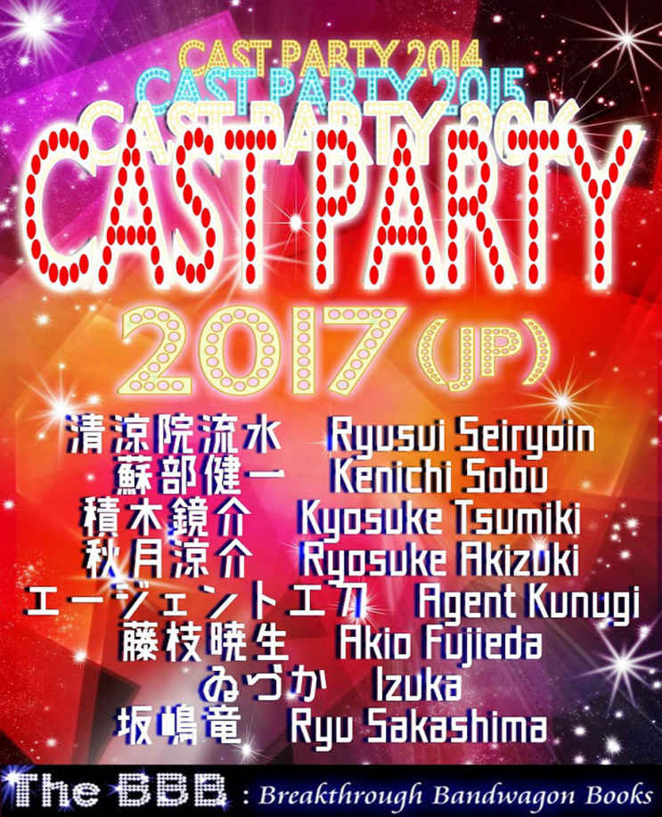
Told by Ryusui Seiryoin, Kenichi Sobu, Kysouke Tsumiki, Ryosuke Akizuki, Agent Kunugi,
Akio Fujieda, Izuka, and Ryu Sakashima
Cover design by Tanya
C opyright © 2018 The BBB : Breakthrough Bandwagon Books
All rights reserved.
ISBN: 978-0-359-06156-3
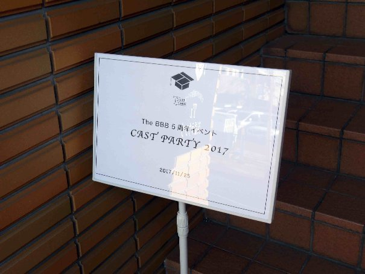
ターニャ : The BBB 5 周年記念イベント、「 Cast Party 2017 」 !!
（※ 当日 、イベント会場で 配布された資料は The BBB 公式ウェブサイトの関連ページ https://thebbb.net/jp/ebooks/cast-party-2017.html より ダウンロードいただけます）
清涼院流水（以下、清涼院） : 皆さん、こんにちは。ぼくは The BBB 編集長の清涼院流水と申します。今日は、よろしくお願いします （観客拍手）。 今日（ 2017 年 11 月 25 日）は年末のお忙しい中、皆さん、いろいろ予定を調整してくださったと思います。ご参加いただき、ありがとうございます。先ほど 、（開演前に） ターニャからアナウンスがありましたが、今日、実は、雑誌の『かつくら』さんが取材に来てくださっています。 ぼくは、 20 年くらい前に 作家として デビューしまし て。 当時、この『かつくら』さんで 「 清涼院流水特集 」という企画 をやっていただいて 、 それがブレイクのきっかけになって 。その後も事あるごとに採り上げてくださって。それがなければ、ぼくは今日、ここにいないと思います。『かつくら』さんには、いつも本当に感謝しています。 The BBB としても、 5 年前にこの活動を始めて、その時も「清涼院流水たちが "The BBB" という活動を始めました」という記事を書いてくださって。『かつくら』の記者さん たち もお忙しいので すが、 ダメモトでお誘いしてみたところ、 5 周年ということもあり、応援に参加してくださいまし た 。本当に、ありがとうございます。今日、『かつくら』の記者 の方 と The BBB スタッフの K.G. さんが 後方から撮影されますが、皆さんは後ろ姿しか写りませんので、どうかご安心ください。
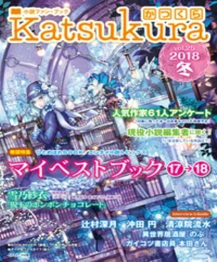
清涼院 : 先ほど、「皆さん、予定を調整して参加してくださって」ということをお話ししましたが、ほんとに、それは、ありがたいことだと思っていまして。 なんにでも 当てはまることで、口で「応援しています」とか「がんばってください」と言うことは簡単なんですが、実際にどこかのイベントの場所に行く、というのは、すごいことなんです。だから、皆さんが、口で応援するだけでなく、実際にここに来てくださったということが本当に すごく 価値のあることだと思っていますし、感謝しています。 The BBB は、今日、実は 4 回目の（リアル）イベントになりま す。 2012 年に活動がスタートして、オープン直後の 2013 年 2 月、ファースト・イベントを開催しました。その後、 2013 年末に最初の Cast Party 、 2014 年末にも 2 回目の Cast Party 。今回、リアルの Cast Party としては 3 回目なのですが、ファースト・イベントもありましたので、 4 回目の（リアル）イベントとなるんです。実は、この 4 回のイベントにすべて参加してくださった方が、 4 名だけ、いらっしゃるんです。今からお名前を呼ぶ方、その場でご起立いただけますでしょうか。まず、高須力弥さん。そのままお 立ちください。ウリオさん。明神サトルさん。松川良宏さん。この 4 名の方は本当に素晴らしくて、何が すご いかと言うと、要するに皆勤賞なんですが、実は、 The BBB の 2 回目のイベントの時点で、皆勤賞は、既にこの 4 人だけだったんです（ 観客 笑）。昔のイベントは、いきなり居酒屋での開催で、有料で、しかも、告知が急だったりして。よく参加できたな、というくらいの。読者の愛を試すかのようにハードルが高かったんですが、ものともせずに参加してくださった猛者 （もさ） の 4 人なんです。今日は、実は、この 4 人のために、ぼくは感謝状をつくってきました。 読みます。「 Certificate of Appreciation. This certificate is awarded to 高須力弥様、ウリオ様、明神サトル様、松川良宏様 」 以下の文面はすべて同じですが 、「 貴殿は 2013 年から 2017 年にかけて開催された The BBB の 4 回のリアル・イベントに、すべて参加されました。この偉業を達成された方は、わずか 4 名であることを鑑みて、特別な感謝の気持ちをここに表明し、謹んで感謝状をお贈りします。これからも愛読者の皆様の代表として、私ども The BBB をどうかよろしくお 願い申し上げます。 November 25th, 2018 清涼院流水 」 皆さん、どうか拍手で讃えてください 。
（観客が拍手する中、皆勤賞の皆様に感謝状が贈られる）
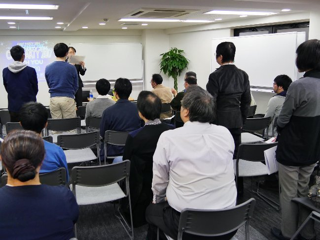
清涼院 : 皆勤賞の皆さん、お座りください。今後、 The BBB を続けて、この方たちがどこまでついてきてくれるのかな、というのも新たな見どころになると思います。で、こうして 5 周年を迎えられたんですが、ぼく はイベントの 告知文で 「ここまで続けられたことは 奇蹟です 」 と書きました が 、大げさでもなんでもなくて 。 初めた時は、 「 1 年、続けられるかな ......」 と、本当に思っていました。まあ、続けられなくなったら、 「 すみませんでした 」 と謝って 、や めるしかないな、と。 The BBB をスタートした時点では、ぼく自身、英語の小説をどこまで英訳できるのか、わからなくて。当時は、 ひとつの電子書籍を英訳するのに、 3-4 か月は、たぶん、かかっていたんです。作品ごとに 3-4 か月かかっていたら、毎月出せないので。で、 The BBB オープン当初に準備していた作品が 3-4 作品だったので、 3-4 か月で終わるんじゃないか、という気持ちもありました。ただ、ぼくの英訳スピードがどんどん速くなって、 5 年間、 1 度も途切れずに続けられました。それだけじゃなく、本当に奇蹟的な巡り合わせがあって、もちろん、ぼくひとりの力ではなく、 The BBB の中心スタッフに支えられているおかげです。 The BBB は、メインは 4 人 のメンバーが中心になってやっているんですけれど、その 4 人を紹介したいと思います。まず、ひとりめは、ここにいる（司会の）ターニャです。そして、 K.G. さん、前に出てきてください。あと、エージェント工刀（くぬぎ）さん、こちらへどうぞ。せっかくなんで、この 3 人からひとことずついただきたいと思います 。
エージェント工刀（以下、工刀） : えっ !? （笑）
清涼院 : では、ターニャから。簡単で良いので。
ターニャ : 皆さん、今日は、お越しくださいまして、どうもありがとうございます。ターニャです。この前の日曜日に別のイベントがありまして、そこで転倒して、骨盤と左の膝を骨折しておりますので、今ちょっと、この（松葉杖に頼った）状態なんですけれども。本日は皆 様 に楽しんでいただけるように、せいいっぱいがんばりますので、どう ぞ よろしくお願いいたします。
清涼院 : K.G. さん、お願いします。
K.G.: はい。 K.G. と申します。 The BBB のサイト管理人をしておりまして、毎月、新刊の更新 などを担当しています。 いちばん力を入れてる、と言うか、個人的に大変だな、と思っているのが、英語版サイト の Semiweekly-pedia です。 1 週間に 2 回、日本の文化 です とか名所を紹介する Wikipedia のようなもの なのですが 、ご興味のある方は、良かったら、ぜひご覧ください。
清涼院 : では、 K.G. さんとターニャは戻ってください。これから、エージェント工刀さんとぼくのふたりが共同司会という形でオープニングを進めます。その前に、工刀さん、自己紹介をお願いします。
工刀 : 皆さん、どうもありがとうございます。おもに校正などを担当しているエージェント工刀と申します。去年 （ 2016 年） 、ドナルド・トランプ大統領が当選して、今年いろいろありまして。私もドナルド・トランプ大統領のやり方を見習って、敵をたくさんつくって。その結果、大変な 1 年になったんですけれども。それでも、この The BBB というサイトは続いておりますし、これからも活動は続くと思いますので、いろいろあると思いますけれども、今後も、よろしくお願いいたします。
ターニャ : 「 Opening ＆ The BBB の紹介」。
清涼院 : ここから、オープニングと The BBB の紹介に入ります が...... 工刀さん 、 いきなり時間を使ってしまいましたね。
工刀 : あ、そうですね。もうだいぶ。
清涼院 : 今日は、かなり予定がタイトで。詰め込みすぎたな、というくらいで。雑談していると、あっという間に終わりそうなんです。皆さん、お手元の配布資料の 4 ページをご覧いただけますか。
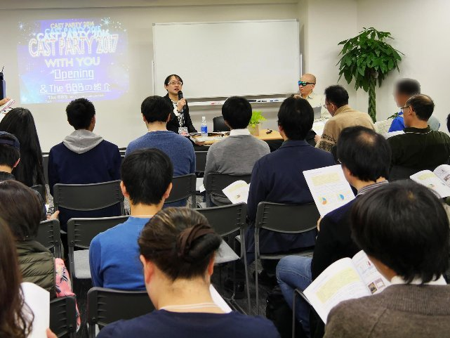
清涼院 : こ の配布資料 4 ページ に、 The BBB の活動紹介を 1 ページでまとめています。最悪、時間がなくなれば、ここを読んでおいてください、と言えば済む内容になっているんですけれども。
工刀 : まあ、そうっすね。
清涼院 : 工刀さん、この The BBB の活動内容を、ざっとご紹介いただけますか。
工刀 : はい、ほんとに、ざっといきますね。書いてある通りなんですけれども。皆さん、 The BBB の Facebook を ご覧 になったことはおありでしょうか。 Facebook では毎日、「 Daily Quote 」 （＝日々の引用） というものが更新されています。 The BBB で販売されている作品から一部分だけ抜粋して、それを載せています。そこで、作品の内容をおさらいできて、どんな作品が売られているのかを、少しでも把握することができます。で、毎週月曜日と金曜日、これは私 もいつも 校正して流水さんの英文にダメ出しもしているんですが、「 Semiweekly-pedia 」と言います。日本のことをよくわからない人たちが、日本のことを知る上 で ちょっと役に立つような、豆知識とか小ネタを 1 週間に 2 回ずつ紹介しております。で、毎週水曜日、「モモの世界遺産旅行記」シリーズ連載。 これは、 世界遺産を背景にした写真が出てきて、写真のどこかに我らがアイドルのモモさんが隠れているはずなんで、それを探してみるという。
清涼院 : モモは、実在の柴犬なんですけれど。毎週日曜日、「モモの世界遺産 旅行記 」の答え合わせというのがあって、水曜日が要するに出題編になっているんです よ 。
工刀 : そうですね。はい。
清涼院 : 水曜日の写真でモモがどこにいたか、気づいたかな？という答え合わせを日曜日にやっています。
工刀 : 日曜日に、その答えを見る、という感じですね。
清涼院 : 実際に読者の方から 伺ったこともありますが 、 Facebook を利用されていない方も 、けっこう いると思うんです。「 Facebook ページを 見たいの ですが、私は、やっていないんです」という意見も聞くんですが、 実は、 Facebook のページは、ご自分が利用されていなくても、アクセスすれば見られますので。もしよ かったら 連載だけでも見ていただきたい、と思います。ご自分で Facebook に登録される必要は、まったくないので。「 The BBB では、（具体的には）なにを やってるんですか？」みたいな ご質問もいただくの ですが、 Facebook では、実は毎日活動している んです。それを見ていないと、なにもやっていないようにも見えますので。あと、これも伝わりにくいかと思うのは、アメリカの電子書店「 Lulu （ルル）」から 最初に 電子書籍を発売するのが The BBB の仕組みなんです。 Lulu でしか出していないのか、と思 われる 人 も いるかもしれませんが、 Lulu で出すと、その あと 、審査を通過して から、（英語版電子書籍は） 世界中の電子書店で売られるんですね。タイムラグがあって、発売直後は Lulu でしか売られていないんですが、この あたり は、 The BBB のサイト で各電子書籍のページを 見ていただければ、ど の電子書店で 売られているかが表示されています。 Amazon とか Apple などの電子書店名が並んでいますが、それでぜんぶではなくて、実は、サイトで紹介していない世界中の電子書店でも、たくさん売られているんです。ただ、ぜんぶは載せられないので、 Amazon など主要書店だけを載せています。 これまで（ 2017 年 11 月 25 日までに） ぜんぶで 132 作品 を刊行していまして 、 配布資料 4 ページに 円グラフがふたつ並んでいます。内分けは、このようになっています。注目 していただきたいのは 、右側の円グラフです。無料、有料の差について、工刀さん、どう思いました？
工刀 : やっぱり無料コンテンツは強いな、と思いました。もちろん、有料のほうを買っていただけると、もっと嬉しいんですけれども、無料を読んだのがきっかけで有料のほうにつないでいただけたら、ありがたいです。
清涼院 : 皆さんが、この割合を多いと見るか少ないと見るか、どのような印象を抱かれるか、ぜんぜんわからないんですけれども。実際やってみると、やっぱり、こんなも の なんだな、というのがわかって。たとえば、シリーズ 1 作 目 を無料で出して、 2 作 目 を有料とした時に、大体、最初の割合は、無料が 100 回ダウンロードされて有料が 1 回なんですよ。（無料と有料のダウンロード数 の比率 は） 100 対 1 なんです、本当に。それが人気が出ると、有料のダウンロードされる割合も、どんどん高くなっていきます。だから、最初はまず無料で読んでいただくしかないな 、と思っていて。無料でも読みたくないものは、有料を買っていただけるはずないですからね。
工刀 : そうですね。たとえば、 『 Towerld （タワールド） 』 シリーズの最初の 3 冊は無料なので、 4 巻からの有料コンテンツにも挑戦していただけると、ありがたいと思います。
清涼院 : 無料の作品を読んでいただくのは、なんのリスクもなくて。 The BBB ウェブサイトの各作品の eBook （電子書籍） ページからもダウンロードできるんです。ボタンを 1 回押すだけでパソコンにダウンロードされて、それによって登録されるようなこともないですから。皆さんに我々 The BBB 関係者から希望することは、まず、無料でお試しください、ということです。 気に入ったら、そのシリーズの有料にも手を伸ばしてもらえると、なお嬉しいですけれども。まず無料で読んでいただけないことには、話にならないので。
工刀 : ダウンロードして、なおかつ読んでいただけると、ありがたいです。
清涼院 : そして、円グラフの下です。やはり、皆さんご存じだと思いますが、森博嗣（もり・ひろし）さんが驚異的な人気で。有料ダウンロードのトップ 10 のうち、 9 作品が森作品。で、有料全作品のダウンロード数の 73% が森作品なんです。圧倒的人気です。
工刀 : さすがですね 、 ほんとに。
清涼院 : いや、ほんと、みんなが森さんなら、 The BBB は、なんの心配も要らない、というか。
工刀 : いや、それは（笑） ...... うーん ...... 。
清涼院 : その下に、有料作品一番人気の 『 The Sky Crawlers 』（邦題 『スカイ・クロラ』） がダウンロードされた国が 並んでいます 。日本語版 『スカイ・クロラ』は、 ベストセラーになった有名な作品 で 。その英語版 『 The Sky Crawlers 』 を The BBB で出させていただいて。最初、 The BBB を始めた時には、ぼくも、英語圏でしか売れないかな、と思っていたら、ぜんぜんそんなことなくて。英語圏じゃない国でも、この 配布資料 4 ページの データにあるように、英語で読まれてるんですよ。で、また 同じく 4 ページ の一番下ですね。 The BBB は今、 184 の国と地域からアクセスがありまして、上位 50 を挙げたんですが、 皆さん 、このランキングを見たら、けっこう意外な結果じゃないかと思うんです。工刀 さん、いかがですか。意外だった点は？
工刀 : 最初に目につくのは、ロシアですよね。
清涼院 : そう。 ロシアが 3 位、というのが 驚きです 。ロシアにも森博嗣さんのファンが すごく いて、ロシアの方から、よく「次は、いつ出るんだ？」と、英語で書かれたメールをいただくんです。そのあたりは、やってみないと、まったく 予想でき なかった ことなの で。ほんと、面白いなと。そんなところで、さっそく次のコーナーに行きたいと思います。 配布資料の 5 ページに移ります。
ターニャ : 「 The BBB のオススメ作品 」 。
清涼院 : これはですね。もう、お手元の資料 （配布資料の 5 ページと 6 ページ） を読んでおいてください（笑）。最初からそのつもりで。これを話しだすと、これだけで 30-40 分、あっという間に終わっちゃうんで。オススメ作品と、その売りを書いておきましたので、これは、皆さん、休憩時間などに御覧ください。さっそく次のコーナーに行きますが、工刀さんは、もう少しそこ（司会者席）にいててください。あとで、お手伝いいただくので。このコーナーは早く終わりました。
工刀 : 高速ですね。
ターニャ : 「『 The Gifted 』の魅力（読者代表・藤枝暁生 さん ）」。よろしくお願いいたします。
清涼院 : 今、奇跡的に、時間通りの進行に戻しました（ 観客 笑）。これから、いよいよ読者代表プレゼンターの方に、ご登場いただきます。ひとりめのプレゼンターを、まずご紹介します。藤枝暁生さん、どうぞこちらにいらっしゃってください。
（拍手の中、藤枝暁生氏が観客席から登場）
清涼院 : ぼくのほうから、 簡単に ご紹介します。藤枝さんは、別に " 怖い人 " じゃなくて（笑）。見た目は、ちょっと怖いかもしれないですけれども。超有名企業の 主席 コンサルタントの偉い方でもあり、実は、ぼくの TOEIC 学習仲間で、日本の TOEIC 界で 実はいちばん 有名な方、 いちばん 人望のある方で。日本で TOEIC を勉強している人なら、知らない人はいない、という。今日は「藤枝さん」なんですけど、実は、「 Rabbit （ラビット）さん」というお名前で、ぼくの『社会人英語部の衝撃』という本でも紹介させていただきました。実は、この藤枝さんが、居 酒屋が大好きで、この『サラリーマン居酒屋放浪記』という本を新書で出してしまったんです。彼のブログが面白すぎて、編集者が出してくださいと言った本です。
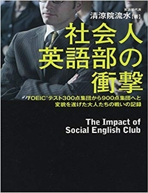 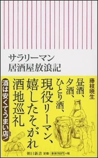
清涼院 : ここから、場を温める意味で趣向がありまして、今から藤枝さんと皆さんで ジャンケン 勝負をして、 勝った 方 お ふたりに、この藤枝さんの ご 本をプレゼントする、という企画をします。なので、皆さん、その場でお立ちください。全員です。工刀さんに仕切りをお願いします。
藤枝暁生（以下、藤枝） : 流水さん、提案なんですが、ぼく、ジャンケンすごく弱いんです。
清涼院 : それなら、いいじゃないですか。
藤枝 : ぼくに負けた方に、あげたいなと。
清涼院 : あ、いいですよ。
藤枝 : だから皆さん、私に全力で負けてください （笑） 。
清涼院 : 工刀さんの掛け声で、「最初はグー、ジャンケンポン」で行きますから。
藤枝 : 負けた人だけ 、まず 残ってください。
ターニャ : 1 回練習して。
清涼院 : 1 回練習しましょう。最初はグーで、パーは出さないでくださいね。
工刀 : グーじゃないと、いけないんですか？
ターニャ : 日本人はグーです。
工刀 : 知らねー。
清涼院 : まず、 1 回目、練習しましょう。
工刀 : はい。最初はグー、ジャンケンポン！
清涼院 : これが練習です。こんな感じで。今のは練習なんで、勝敗は関係ないです。今からじゃあ、やりましょう。皆さん、 2 ラウンドありますからね。最初に負けても 、 がっかりしないで。
藤枝 : いや、だから、負けたほうがいいんです。
清涼院 : あ、そうか。
藤枝 : 私に勝った人と、あいこの人は座っていただく、ということですね。
工刀 : じゃあ、いきます。最初はグー、 ジャンケンポン ！
（以下、ジャンケン勝負が 2 分 30 秒続き、勝者 おふたり に本を贈呈）
清涼院 : ジャンケンで予想以上に時間をとってしまいましたね （観客笑） 。では、今から 20 分を目安にこのコーナーを進めます。 10 分くらい経ったところで、作者の秋月 涼介（あきづき・りょうすけ） さんにもご登場いただこうかと思っています。まず、読者代表ということで、藤枝さんに 『 The Gifted 』 の魅力について伺いたいと思います。皆さん、配布資料の 7 ページ、『 The Gifted 』 のページをご覧ください。 『 The Gifted 』 シリーズの既刊と、スピンオフ企画 の『 The Sifted 』 シリーズ、あと、主要登場人物が載っています。
藤枝 : Vol.7 が出るんですね。知らなかった。
清涼院 : （ 2018 年） 1 月末に発売予定です。日本語原稿は完成しています。あとは、ぼくが英訳するだけ、という状態です。
藤枝 : 英訳と同時に出す、ということなんですね。
清涼院 : そうです。秋月さんの 『 The Gifted 』 は、いつもだいぶ早く完成していて、刊行する月に、ぼくが毎回、英訳して（それと並行してスタッフが英文校正して）いるんです。そうしないと、毎月、英訳を抱えていますので。
藤枝 : なるほど。
清涼院 : 『 The Gifted 』 について、いかがですか。
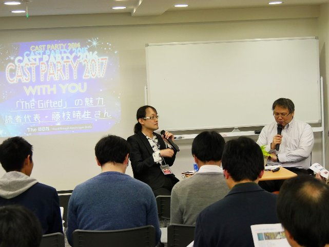
藤枝 : 当然、 7 作目は読んでいませんが、 6 作目まで読んで、まず、この小説って、 ぼくは入りやすかったんですが、 「生まれ変わり」が前提になっているじゃないですか。まあ、高次生命体ということで。 4 次元以上のところに魂がふだんはあって、で、基本的には自分の魂を磨くために、わざわざ 3 次元に降りてきて、人間として苦労する、という前提がある、と。けっこう、ぼくは、そのリーインカネーションは、自分で調べたことがあるんです。 10 年以上前に。で、なんとなくスッと入ってきて。ただ、秋月さん、その生まれ変わりについては、くわしく触れていないですね。たまに、ちら っと入ってくる。たとえば、 5 作目だったかな。ヨマが出てくる時に、「 1 万年前から知り合いだ」みたいな話が、ちらっと出てくる。そこに深入りしないところがうまい、と。
清涼院 : ほんとは深入りしたがっているんですよ （笑） 。ぼくも秋月さんもスピリチュアルが大好きなんで、もっといきましょうよ、みたいな感じでは話してるんです。
藤枝 : それやっちゃうと ...... 。
清涼院 : 彼は実は、手加減していて。あまりやりすぎると、ふつうの読者が ...... 。
藤枝 : ヒキますよね。
清涼院 : そうなんです。ただ、一方で、スピリチュアル好きの人から熱狂的に支持される可能性もあって。その あたり のサジ加減が難しくて。秋月さんは本来、いわゆるミステリー （推理小説） を書かれていたわけですけれども、どんどんスピリチュアル要素が強まって。 『 The Gifted 』 については、（編集と英訳担当の）ぼくも、そういうのが好きなので、どんどん加速していっている、というか。
藤枝 : 神秘性ということについては、そうです よ ね。
清涼院 : ミステリーで難しいのは、超能力とかを持ち込むと、ミステリーのロジックが「なんでもあり」になっちゃうんで。そこが難しいというのは、昔から言われているんです。 『 The Gifted 』 に限らず。
藤枝 : そこらへんは、うまくタガをかけていますよね。こういう場合はできないとか、各能力の制約を、うまく制御しているところがあるので、だから成り立っているんじゃないですかね。なんでもありにしちゃうと、ほんとに、なんでもありで、どうにもならなくなりますから。
清涼院 : そのサジ加減が、すご く 難しいんですけど。
藤枝 : あと、気に入っている、というか、いたずらに登場人物が増えない。
清涼院 : ぜんぜん増えないですね。
藤枝 : 5 作目で、ようやくエクソシストのヨマが入ってきたくらいで。増えない。これ、増やしていくと簡単なんでしょうけど。つまんなくなっちゃう、というのもあると思うんですね。
清涼院 : あと、 （作品内の） 時間が経たないんですよ。
藤枝 : そうですね（笑）。
清涼院 : 必ず 1 話 1 か月なんですよ。だから、まだ（ Vol.1 から Vol.6 まで） 5 か月しか経っていなくて。そうとう濃い日常なんです 、 彼らは。毎月かなりディープな事件が起こっている、ということになるんで。ぼくは彼ら登場人物の将来も見たいんですけれど、 1 年 1 作で 1 か月しか経たないんで、ぼくと登場人物の年齢が、どんどん離れていっている、という ......
藤枝 : 100 歳くらいまで生きないと、だいぶ見 ら れないですね。
清涼院 : そうなんです。で、実は秋月さん、長寿の家系なんです （観客笑） 。 100 歳を超えている人がたくさんいるような家系なんで。たぶん、秋月さんは長期的なプランで 100 歳を超えて 書き続ける、という。
ターニャ : （秋月氏に向かって） どうなんですか？長期的なプランは？
清涼院 : では、秋月さん、ご登場ください。皆さん、拍手でお迎えください。
（秋月涼介氏が登場。覆面作家につき、写真はナシ）
清涼院 : あとまだ 15 分くらいしゃべれますので。
秋月涼介（以下、秋月） : よろしくお願いします。長寿というか、おじいさん、おばあさんは、 93 、 94 、 101 歳とかまで生きて。
清涼院 : すごいじゃないですか。
藤枝 : 長寿ですね。
清涼院 : 充分、長寿ですよね。
秋月 : 自分はどうかわからないんですが、流水さんからは、いつも、「秋月さんは 100 歳とか 120 歳まで生きるから、だいじょうぶ！」とか言われてて （笑） 。
清涼院 : ぼくが、そこまで生きてないですね。英訳する人が ...... 。
秋月 : 訳してもらえなくなっちゃう、という話があって。そんな感じで。あまり深く考えずに書いていて、いつ終わるかは、自分もまだわかっていません。
藤枝 : ということは、今、 7 作目まで仕上げて、 8 作目、 9 作目の構想というのは、今の時点では ...... ない、という感じでしょうか。
秋月 : 8 作目は、今、 2 章まで書かれています。
藤枝 : すでにあるんですね。
秋月 : はい。
藤枝 : うーん、なるほど。今日、ぼくは、いちばん聞かれたくない質問というのがあって。 今、 6 作目まで読んで、どれがいちばん好きですか、と聞かれるのは嫌なんです。
清涼院 : 難しいですね。あ、でも、ぼくは言えますね。ぼくは、 The BBB の ほかの eBook でも言ったのですが、 5 作目がすご く 面白かったんですよ。 5 作目だけでも読んでほしいです、みたいな発言もしましたし、これは秋月さんの最高の作品かな、と思ったら、実は、新刊だから言うわけじゃないんですけど、来年（ 2018 年） 1 月に出る Vol.7 が、本当にすごいんですよ。これは、佐久間真人（さくま・まこと）さんという表紙を描かれているイラストレーターの方のインタビュー本を今年 （ 2017 年に） 出し て 、その中でも言ってるのが、秋月さんは、 Vol.7 は、めちゃめちゃ苦戦されたんです。難産だったんです。
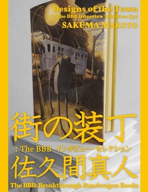
清涼院 : で、待っただけの甲斐があったな、という 、すごい 作品だったんで。でも、いっそう、スピリチュアルがきつい人は苦手かもしれない。見事にスピリチュアルと論理が融合して。それがすごいな、と思って。秋月さん、あれは、ちょっとさわりを言ってもいいんですか？あの見取り図のやつとか。
秋月 : お任せします。
清涼院 : 飛行機の中で事件が起きるんですが、飛行機の中で、悪霊がいろんな席にいて、悪霊のいる席はここです、と、図も載っていて。それが謎解きにつながってくる、というのが、すごく面白くて。
藤枝 : あー、なるほどね。
清涼院 : ミステリー小説で、あんな大胆な見せ方はないんじゃないか、というくらいで。
藤枝 : 『 The Gifted 』 って、基本的に、登場人物が少ないのに、犯人がわかんないんですよね。最後まで。
清涼院 : うん、たしかに。
藤枝 : さっき 5 作目が好きだと流水さんがおっしゃってましたけど、 5 作目なんて、「まさか、そいつ !? 」という感じなんですよね。予想しながら読んでいたんですが、ぼくの予想通りではなかった。あの人物が、なんで ...... と。
清涼院 : そのあたり、秋月さんは、ミステリー作家としてのこだわりは、すごく感じますね。でも、いつも「ミステリーは、自分は苦手なんです」と、おっしゃって。
藤枝 : えっ !? （笑） そうなんですか？
清涼院 : 彼は、スピリチュアルとグルメが大得意で。今日、積木鏡介（つみき・きょうすけ）先生も、いらっしゃ っ てますけれど、積木さんが最初に、「秋月さんの描く食事は、うまそうですよね」と、おっしゃって。それで、ぼくは秋月さんに 『 The Sifted 』 を書いていただいたんです。
藤枝 : 『 The Sifted 』 は、つまり、 『 The Gifted 』 から ......
清涼院 : スピンオフですね。登場人物たちが、秋月さんが実際に訪れたレストランについて語る、という。
藤枝 : そうですね。
清涼院 : あとで、秋月さんご本人から （『 The Sifted 』の） プレゼン も あります。
藤枝 : ミロが好きなのがラーメンで、面白いのが、「日系ラーメン」って （作中に） 出てくるじゃないですか。
清涼院 : はいはいはい。
藤枝 : 「二郎系」でも「家系（いえけい）」でもなく。「日系ラーメン」ってなんなんだろうな、というのがあって。けっこう面白いなと。
清涼院 : あれ、でも秋月さん、「日系ラーメン」って実際にあるんですよね？
秋月 : いや、そういうわけでは ......
清涼院 : ないんですか。
秋月 : 一応、「シティ」（という作品の舞台 となる架空の都市 ）が、どこかわからない国なので。そこで、日本系のラーメンということで、「日系ラーメン」という呼び名がついています。
藤枝 : そもそも、ラーメンって日本にしか ...... 日本のラーメンって、日本にしかないですよね。
秋月 : 日本で進化したラーメンは、そうですね。中国などにもありますが、味とかがぜんぜん違うので。
藤枝 : ミロとかクロエとかサヤとか、食事する場面が出てきて、それは本当に、 『 The Sifted 』 とかぶっていて 、 面白いですよね。
清涼院 : 食事する場面だけ活き活きと ...... " だけ " と言うと問題ありますけれど （笑） 。食事場面 は特に 、筆が走っている感じが、すごいんですよ。いつも作品のやりとりを秋月さんとメールでするんですが、「謎解きが思いつかないんですよ」とかおっしゃって。「ミステリー、苦手なんですよ」 、 と。
藤枝 : それぞれ作家さんによって、苦労されるポイントというのが、違うんでしょうね。 スッ と書けちゃう、ってことは、あるんですか？
秋月 : ほぼないです。
藤枝 : ないらしいです（笑）。
秋月 : ミステリーのところだけ、悩んでいます。周辺の話は、すぐにできちゃうんですけど、どうやって謎解きしよう、というところだ け 、いつも悩んでいます。
藤枝 : 謎解きは、だいたい 最後に『 名探偵コナン 』 みたいに、ミロがやるじゃないですか。あれは、これからも、そんな感じで？
秋月 : そうですね。ミロ先生は、すべてを見通している、というか。
清涼院 : ミロは、ちょっとカッコ良すぎますよね。あれは。嫉妬しますね。
藤枝 : そうですね。未成年のくせに。
清涼院 : 美青年で天才、みたいな。まあ、ミステリーでは、よくあるのかもしれないですけれど。
藤枝 : そこらへんも面白いですよね。あと、ちょっと思ったのが、各作品、 1 作目、 2 作目と進んでいくにしたがって、やっぱり、われわれもキャラクターに慣れていくじゃないですか。ミロとかサヤとかクロエとかリカルドとか。慣れていって、感情移入もしているし、彼らの人となりがわかって、安定感が増していくような感じはしますよね。安心して読める、と。あと、シリーズものって、書いていくと、たとえば、 10 個くらい話があるとして、 6 、 7 と書いていくと、残りがなくなっていく手詰まり感とか、閉塞感みたいなのがあって。そろそろ終わるな、 このシリーズ、という感じがするんだけれども。秋月さんのこの本って、それぞれがアップされるたびに、なんかまた次のステージに上がって、視界がバーンと開けるような感じがするんですよね。
清涼院 : そうなんです。 ぜんぜん閉塞感がなくて。たぶん、ご本人が 100 年計画くらいで考えてらっしゃるんで。
藤枝 : 長寿だからですね。それを感じたのは（ Vol.3 の）「スカイダイビングクラブ」のところからなんですよ。スカイダイビングのこの話は、躍動感とかスピード感が、今までと違うんです。ぼく、（ベストセラー刑事小説の） 『 新宿鮫 』 とか好きなんですけれど、 2 作目 『 毒猿（どくざる） 』 の独特のスピード感、緊迫感みたいな。それに近いんですよ。上から落っこちてくる、という感じが。それを感じたというのはあります。で、 4 作目、 5 作目は、またぜんぜん違ってて。ぼくも「北病棟の死神」という 5 作目がすごい好きなんだけれども、なんと言う か手詰まり感がなくて。どんどん広がりとか無限の奥行きとか、そういうのは感じる気がします。
清涼院 : もしかしたら関係あるかもし れ ない、と思うのは、秋月さんとぼくで今後どういうふうに シリーズを 展開していくか相談していて、ぼくの意見では「 " ラスボス " （ ＝ 最後の強敵）がいたほうがいいんじゃないですか」と言ったことがあって。ラスボスなり大目標が必要かなと。あとで話が出ますが、 積木鏡介先生の『 都市伝説刑事 』シリーズ だと、「黒い友達」、「白い友達」というラスボスみたいな存在がいるんです。で、「ラスボスいたほうが盛り上がるんじゃないですかね。出しませんか？」と、ずっと言ってたら、秋月さんが 『 The Sifted 』 のほうでラスボスを出してきたんです。 グルメ・リポートなのに、そっちで最近、ラスボスが出てきたんですよ。
藤枝 : やっぱ、そっちのほうが好き、ってことなのかな。
清涼院 : なんで 『 The Sifted 』 でラスボスが出てくるんだ ？ 要らないじゃないですか、みたいな。だから、たぶん、 『 The Gifted 』 は良くも悪くも、大目標がまだないので。秋月さんの良いところって、飄々 （ひょうひょう） としてらっしゃるところで。あまり物事に縛られない、というか。それが閉塞感を生じさせない原因かな、とも思ってるんですけどね。あと、個人的には、皆さん、お気づきかわからないですけど、 （『 The Gifted 』の） Vol.1 と Vol.2 は、実は、英訳者が違う方だったんですよ。
藤枝 : そうですね。気づきました。
清涼院 : 実は、秋月さんの個人的なつながりのある方で。秋月さんのご推薦で、その方にお任せしていたんです。あのあたりは、ちょっと話してもだいじょうぶですか？
秋月 : お任せします。
清涼院 : 秋月さんは温厚なんですが、その方とはソリが合わなくて。その方はけっこう、神経質な英訳者なので。そのストレスで、秋月さんが珍しくイラッとされていて。それで、 Vol.3 から、ぼくが引き継ぐことになったんです。だから、ぼくは Vol.3 から自分で英訳するようになったので、よりいっそう愛着が湧いて。実は、そんな舞台裏の話もあったりして。
藤枝 : Vol.1 は、英訳のほうも無料で ...... 。
清涼院 : Vol.1 は完全に無料ですよ。英語版も。
藤枝 : ぼく、実は、 Vol.1 は、英訳から読んだんです。
清涼院 : おおーっ、そうでしたか。
藤枝 : で、その後に日本語を読んだんですね。単にそれは、勉強したい、というだけの理由で。
清涼院 : Vol.1 、 Vol.2 の英訳者は、すごい実力者で、すごくカッコイイ英文にこだわられる方だったんです。原作をいかにカッコ良くするか、という。でも、ぼくのスタンスは、ぜんぜん違って。自分が正しいというわけではないですが、ぼくは原作にいかに忠実にニュアンスを伝えるかだと思っているので。カッコ良さは必要ない、くらいに思ってるんです。原作と同じ温度にできていれば良いと思っていて。このあたりは森博嗣さんともお話ししていて、ぼくは森さんの文体を、そのまま英語で再現することを目標にします、と。これは、すべての作家さ んについて、そうなんです。ただ、 Vol.1 、 Vol.2 の英訳者は英文のカッコ良さにこだわっていて、その姿勢はもちろん認めていますし、だから実は、最初の 2 作は、英文がカッコイイんです。翻訳は、読者の好みもありますので、どちらが正解、などと言うつもりはないんですが。あと 5 分くらいでこのコーナーを終わります。藤枝さん、聞きもらしがないように。
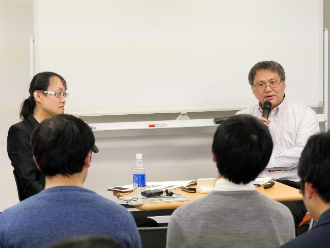
藤枝 : いろいろ 聞 きたいことはありますけれど 。 読者目線というのもあるし、ここにいる皆さんは、 きっと 作家の卵さんだったりするのかな。
清涼院 : そうですね。創作されている方は、かなり何人もいらっしゃいます。
藤枝 : どういうふうに物語がつくられるのか、ということが、みんな知りたいんじゃないですかね。ぼくが 書いた さっきの本 （『サラリーマン居酒屋放浪記』） は、ただ事実に基づいて 書いて いるだけなので。創作ということではなく、事実の描写ですから、特段、創作する必要はないんですけれど。当然、小説というのはフィクションですから、どうやって創作のソースを 持ってくるのか、とか、どうやって組み立てるのか、とか、そのあたり、どういうふうにされているのかなと。
秋月 : ちょっと特殊なんですけど 。 たとえば、 Vol.1 はですね、流水さんから「何か書きませんか」と話をいただいて、何を書こうかな、と思っている時に、打ち合わせがあって 。 そこで都市伝説だったら誰にも確認せずに使えるんじゃないの、って話になって。じゃあ、ちょっと都市伝説っぽいのにしようかな、と思って。で、ある時、台湾に行ったんですけれど、そこで寝ていると夢を 見 まして。それがまさに、カメラとか写真にだけ写る幽霊の夢 で 。自分的には怖かったんですけど、それで、「あ、これ使えるな」と思って。それで、 Vol.1 のネタができました。で、それをミステリー仕立てにするのに、ちょっといろいろ考えて、できたのが Vol.1 ですね。それが流水さんには気に入っていただけて、最初の刊行となりました。で、 Vol.2 では、今度は都市伝説をちゃんとしようと思って、アメリカの都市伝説の本を買って読んで 。 その中に猫の死体が消えるという話があるんですけれど、それをベースにつくったものが、 Vol.2 ですね。そんな感じで、ちょっとずつ、いろんなところから持ってきてはそれを 4 人のキャラクターの中で事件を起こして解決するという形に ハメ 込んでいく、とい う感じでつくっています。
藤枝 : 夢 ...... 夢がキーワードなんですね。 3 作目もそうですよね。夢の中に吸い込まれて、墜とされる、という。
秋月 : それも実は （作者自身が見た） 夢でした。
清涼院 : 毎回、夢じゃないですか！ （笑）
藤枝 : 寝なきゃダメ、ってことですね （笑）。 とりあえず寝ると。
清涼院 : 寝て、夢はメモをとる、という。
秋月 : びっくりした夢だったんですけど、ほんとに、空からスカイダイバーが墜ちてきて、目の前でピクピクしていたんです。
清涼院 : そのまんまじゃないですか ！（笑）
藤枝 : そのまんまですね （笑） 。
秋月 : こんな夢を見る人はいないだろうから、使っちゃおう、と思いました。
清涼院 : 毎回、夢ですね ...... 。
藤枝 : なんか、あんまり参考にならないかもしれないですね。まず、夢を見てください、と。
清涼院 : 今日から夢をノートに記録するんじゃないですか。
秋月 : それ以降は、いろいろネタを探しては 書いて ます。
藤枝 : あと、もうひとつだけ聞いてもいいですか。ずっとこのミロ、サヤ、クロエ、リカルドと 4 人でやっていて、ついにヨマが登場しました。これは、なぜなんですか。
秋月 : それは、サヤのライバルをつくろうと思いまして ......。
藤枝 : なるほど。 " 恋愛の " ライバルですね。
秋月 : クロエは、ちょっと歳が上なので。あ、登場人物を全員、高校生にしなかったのは、全員を高校生にすると、視点が低くなりすぎて、良くないかなと。リカルドでも 33 歳くらいだと思うんですけど、そのくらいの視点もあったほうがいいかな、と思って。年齢をバラけさせているんですけれど。そうするとサヤのライバルがいないと思って、 5 話からヨマを追加し て 。 それと、 4 話の最後くらいから、先ほど言われていたスピリチュアルが加速していまして 。 そのために、霊が見える人を登場させようと思って、追加しました。
藤枝 : 絶妙なタイミングで入ってきた、という感じがします。カレー好き、というのがまたいいですね。
清涼院 : ぼくが面白かったのは、この 配布資料 7 ページの登場人物表で、サヤ・トウマのところで。「悲しい過去を背負っ た 女子高生。好きな もの は、甘いもの全般」。悲しい過去を背負っているけど、 「 好きな ものは、 甘い もの 全般 」 って、なんか緊張感ないな、と。藤枝さん、そんな感じで、だいじょうぶですか。
藤枝 : そうですね。またちょっと読み返して、新しい発見を、と思っています。 1 回読んだだけでは気づかないところって、小説では、たくさんあるので。読み返していく中で、またいろんなことがわかったら、こっそり 聞いて みたいな、と思います。
清涼院 : 藤枝さんと秋月さん、ありがとうございました。皆さん、拍手でお送りください。ありがとうございました。
ターニャ : 「『 都市伝説刑事 』 の魅力 （ 読者代表・ゐづかさん ）」。 お願いいたします。
清涼院 : ゐづかさん、ご登場ください。皆さん、拍手でお迎えください。
（ ゐづか 氏、登場）
清涼院 : ゐづかさん、じゃあ簡単に、自己紹介をお願いします。
ゐづか : ただ今ご紹介いただきました、ゐづかです。立場としては今、大学 4 回生で、京都のほうで日本文学と映画の勉強をしています。ここにお呼びいただいた縁としては、 4 年前の Cast Party （ 2013 ） に参加させていただいて、その際に清涼院先生や積木先生とお話ししたことが、きっかけで、今回お声がけいただいた、ということですね。今日は積木先生と清涼院先生に囲まれて緊張してしまうんですが、なんとか 『 都市伝説刑事 』 の魅力を、皆さん ...... と言っても、もうお読みになっている方がほとんどなのかもしれませんが ...... 、プレゼンすることができ れば、と思います。よろしくお願いします。
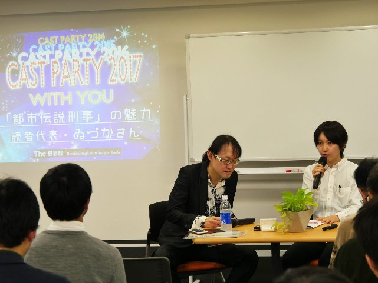
清涼院 : ゐづかさんとは最初に Cast Party （ 2013 ） でお会いしたんですが、その時からけっこう異彩を放っていまして。当時、居合わせた方からも「ゐづかさん、すごかったね」と聞いていて。ぼくも、すごく印象に残っていたんです。今回どうしても、ゐづかさんにこのプレゼンをお願いしたかったのは、実は、 『 都市伝説刑事 』 の最新刊 （「事件 5: 学校の七不思議 Vol.1 」） で彼が出てくるんですよ。 「イヅカ さん」という 登場 人物が。実は、 1 作目から出ていたある人物が、本名「 イヅカ 」であったことが判明して、つまり、 1 作目からずっと出ていた、ってことで。それは、たぶん、積木さんとゐづか さんの信頼関係というか、ぼくはよく知らないですが、 twitter でも交流されていると思いますので。 （客席の中から積木氏の声）え？ そんなことはないんですか？じゃあ、積木先生もお呼びしちゃいましょうか。積木先生、どうぞ、ご登場ください。
（積木鏡介氏、登場）
積木 : いや、あれはですね、最初は「 飯塚（いいづか） さん」という名前だったんですけれども、清涼院先生のほうから、「これは、 " い い づか " さんですか、それとも以前キャスパに参加された " ゐづか " さんの読みですか？」と聞かれたので、それで急遽、「 イヅカ 」に 読みが 変わったんです （笑） 。第 1 作から登場しているわけではありませんので。
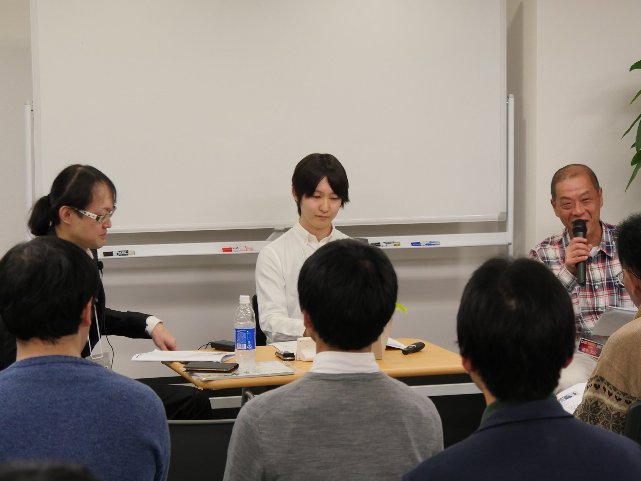
清涼院 : では、せっかくなので、ゐづかさん、この魅力を語っていただけますか？ゐづかさんなりに。
ゐづか : 先ほどもちらっと申し上げた通り、この Cast Party にいらっしゃる方だったら、もう本当に自分よりはるかに読み込んでいらっしゃって、魅力なんかも熟知しているよ、という方が多いかと思 いまして 。最初は、積木先生に質問を投げかける形にさせていただこうかと思ったのですが、先ほど、軽く積木先生とお話ししたところ、自分が用意した質問が、ことごとく 次の 第 2 部のコーナーで積木先生がお話しする部分だったので、お耳汚しになってしまったら恐縮なんですが、私の感想という形でよろしければ、お話ししていきたいと思います。
清涼院 : どうぞ、お願いします。
ゐづか : ここに積木先生の 『 都市伝説刑事 』 をお読みになっている方が、どのくらいいらっしゃるか、参考までに、お手を上げていただけると嬉しいんですけれど。 ...... あ、やっぱり、いらっしゃいますね。
清涼院 : もちろん、そうでしょう。
ゐづか : 積木先生の著作を愛好してらっしゃる方だったら、皆さん、通じるところがあると思うんですけれど、作中で使われている言葉として、 " 連続都市伝説殺人事件 " ------ これにときめかないミステリー読者は少ないんじゃないかな、と個人的に思うんです。この配布資料 8 ページ に登場人物紹介があるんですが、主人公が小林一樹 （こばやし・かずき） 刑事。この刑事が、 先ほど清涼院先生がちらっと言及していたように、いわゆる大目標、ラスボスにあたる存在 ------ 先ほどは、「黒い友達」、「白い友達」が出ましたが、「友達の友達」という存在が出てきて。私が初読時に驚いたこと として、『都市伝説刑事』というタイトルから、自分の想像力な貧困なのかもしれないですが、オーソドックスな刑事ものを想像していたんですね。都市伝説を題材に何か事件が起こるんだろう、という想像はしたんですけれど、冒頭から良い意味で裏切られて。謎の存在、「黒い友達」と「白い友達」が、何やらスケールの大きな話をしていると。
清涼院 : あれは、ぼくも本当に、ぶっ飛びましたよ。未読の方は、 1 作めが無料でダウンロードできますので、ぜひこの機会に読んでいただきたいのですが、毎回このシリーズは、プロローグで「黒い友達」と「白い友達」という謎のふたりが、あやしいトークをするんです。これが宇宙規模のぶっ飛んだ話で、最初、ファンタジーなのかな、と思ったんです。どうも実在の世界らしい、ということが、すぐにわかって。毎回、あれが、やみつきになるんですよ。で、 （ 4 作目の） 「鮫島事件」ではそれがなかったので、秋月さんがショックを受けられた、という （笑） 。
ゐづか : （「鮫島事件」は） 番外編扱いになるんですよね。
積木 : 番外編でもあり、原点にもなる、ということで。
清涼院 : あ、そうか。原点だから、プロローグがないんですね。なるほど。
積木 : たまたま入れるところがなくてね。
清涼院 : 書き忘れたとか、そういう話ですか？
積木 : 特徴としては、全身白装束なのが 「 黒い友達 」 で、黒装束で頭巾 （ずきん） をかぶっているのが「白い友達」である、というところも、ちょっとおぼえておいていただきたい、と。
清涼院 : これが紛らわしくて、作者の積木さんも混乱されているし、英訳者のぼくも混乱するし、エージェント工刀さんも混乱して、みんな発狂しそうになってるんですけれど。
積木 : 何度あれを間違えたか。
ゐづか : 自分も混乱しました。
清涼院 : 読者も全員混乱していると思いますよ、あれは。
積木 : ちなみに、あれは心理学系の本に載っている実際の事例で。ある 病を患っている 人が見た夢に、そういった描写があるんです。黒いナントカが白装束で、白いナントカが黒装束だったと。そんな話をヒントにして書いてみました。
ゐづか : シリーズ各作品のタイトルに表れているように、たとえば、 「 メリーさん 」 、 「 ひとりかくれんぼ 」 ...... 実在する既存の 都市伝説を題材にした事件、おもに殺人事件が起こっていく。それを主人公たちが捜査していく、という構成が各巻で。それに通じてラスボスなのであろうと思われる存在たちが、裏で手を引いているのではないか、という大きな話が進んでいて。それが " 連続都市伝説殺人事件 " で。先ほど 話題に出た 秋月さんの作品のように、緊張感 という意味では 薄いかもしれないけれど、ある種のストレスが少なく読める、読み口が 快い 、というものもあると思います。一方、積 木先生の作品にラスボスが存在することで、閉塞感を感じるかというと、そんなことはなくて。なぜかと言うと、あくまで個人の感想で申し訳ないんですけれど、キャラクターの明るさに救われている部分があるんじゃないかなと思います。
清涼院 : たしかに。
ゐづか : 小林刑事をはじめ、 配布資料 8 ページの 登場人物紹介のところに、さらっと書いてありますけれど、猿飛 菫（さるとび・すみれ） という 、 ヒロイン ...... になるんですかね。
清涼院 : さらっと、 「 忍者の末裔 （まつえい）」、 と。
ゐづか : さらっと書いてありますけれど、キャラクターがことごとくアクが強くて、全編通して基本的にコミカルな描写が続くので。対照的に、事件は凄惨 （せいさん） で、どろどろした描写があったりだとか、読んでいてしんどいような描写が起こったりする一方で。
清涼院 : ギャップが魅力ですよね。事件の陰惨さと人物の明るさという。あと、ぼくがすごく感銘を受けたのは、 もちろん 1 作ごとに完結しているんですが、シリーズを追うごとに実は積木さんの中に壮大な構想があって、 『 都市伝説刑事 』 という大長編が最初から頭にあって。その伏線を張りまくっている、というのが後半になるにしたがって、わかってきて。その構想力が、けっこう恐ろしいなと思って。積木さんは 1 作 目 を書かれる前から、「これは、ぜんぶで 6 作になります」と、おっしゃっていたので。はっきり見えてたんだな、というのは最近になってようやくわか って。いかがですか、積木先生？
積木 : 最初からオチは見えているんですけれども、ちょっと途中から欲張りすぎちゃった、というのはありますね。膨らませすぎて。
ゐづか : 読者としては、それはすごく楽しみなところですね。 6 作で完結予定ということは、この今 、 展開している「学校の七不思議」編 ......
清涼院 : ...... の次があるんですよ。
ゐづか : 次で終わる、という。この「学校の七不思議」編なんですが。
清涼院 : Vol.1 が、 いいところで終わっていますよ。ほんとは （ 2017 年） 11 月に後編 （ Vol.2 ） が出る予定だったのですが。
積木 : すみません。
清涼院 : 後編は来年 3 月予定ということで 。 （註 : 当初 1 冊になるはずだった後編部分は、長くなったため 2 分冊となり、 Vol.2 は 2018 年 5 月に、 Vol.3 は 2018 年 7 月に、それぞれ刊行されました）
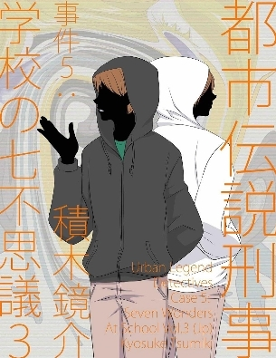
ゐづか : ネタバレになってしまうの で 言えないのですが、自分としても驚く展開があって。
清涼院 : ここで終わるか、というオイシイところで終わってしまうので、これで （ 2018 年） 3 月まで待たされるのはきついな、という。
ゐづか : 楽しみにしております。この作品について、 「 積木先生にお伺いしたかったけれど、あとのコーナーの楽しみを削ぐといけないので、遠慮させていただ いた」 と 先ほど 言ったのですが、やはり、都市伝説のお話は伺ってみたいんですね。いつだったか、『ドーベルマンに何があったの？』という （ジャン・ハロルド・ブルンヴァン著の） 研究書に言及されているのを twitter で見て興味を持ちました。都市伝説は日本のローカルなものだと自分は勝手に思っていて。もちろん、民間伝承というものは、どこにでもあると思 います。 近代の産物としての都市伝説というものが、翻訳可能ではあると 思うんですが、ただ、清涼院先生が翻訳をしてらっしゃるということで、都市伝説を英語に訳す際に、どのような苦労......苦労は必ずしもあるとは限らないですが......なにか思うところはあったのかな、というのが気になりました。
清涼院 : 英訳時の苦労は、まったくないですね。訳せないことは、ほとんど何もない、くらいの感じなので。
積木 : 英訳に関しては、 twitter でも言ったんですが、実は、英語がわからないので、英語版は、ほとんど読まないんですよ。で、第 1 作目で猿飛 菫 さん、まあ " サスケ " という 通称 で出てくるんですが、その人が主任さんを呼ぶ時、日本語版では、 " ボス " だったんです。「ボス、かしこまりました」、と。その言葉はそのまま訳すだろうな、と思ったんですが、本が出て数か月経ってから、なんと、清涼院先生、「ボス」の部分を、 "Madam" と訳してたんですよ。これ、名訳ですよね。知ってたら、私、日本語版をぜんぶ「マダム」に直していました。
清涼院 : あれは、実は、ニュアンスが違うんですよ。 Madam とか Ma'am というのは、目上の女性に対する呼びかけなので。だから、（「ボス」という言葉と）両方使ってもいいんです。サスケが "Boss" と言ってい る場面も 、あ った ような気がしますけれどね。男性に Sir と言うじゃないですか。それの女性版が Ma'am とか Madam なんです。だから、女性大統領は Madam President というんです。
積木 : 英訳はわからないんですけど、なにしろ響きがカッコイイですよね。マダムって。俺、あれをもし知っていたら、物語が変わったかもしれない、と思いますよ。
清涼院 : （捜査主任の） 立花真理子は、すごいキャラですからね。
ゐづか : すごいキャラですね。
清涼院 : あと、困ったといえば、「メリーさんのメール」の「さん」のニュアンスが 英語では 出せないんですよ。だから、 "Merry's Mail" とせざるをえなくて。これは積木さんからも、「 Miss Merry だったら違うんでしょうね」と言っていただきましたけれど。
積木 : 実際にね、やっぱり Miss Merry は、おかしいですよね。
清涼院 : おかしいです。で、「 〜さん」というのは、実は英語でも通用するんです。日本人が相手の名前に --san を つけることは知られていて。 Tsumiki-san といえば、 -san が敬称だというのは伝わっているんですけれど、タイトルにそれを入れるのは違うなと思って、 "Merry's Mail" がいいかな、と。苦労といえば、そういうところですかね。
ゐづか : 面白いお話を伺いました。先ほど申し上げたように、自分は日本文学と映画の研究をしているんですけれど、その観点からも、このミステリーの形式、いわゆる探偵小説の形式と都市伝説という題材の取り合わせは大変面白く読ませていただいて。 『 ロジャー・アクロイドは、なぜ殺される ？』 という本を書いた内田 隆 三さんという社会学者の方 の 著作に 、『 探偵小説の社会学 』 というものがあるんですけれど、そこでやはり、内田さんは「探偵小説という言説が近代社会の大衆の不安に関係しており、またその言説が近代的な大都市の文化陥穽 （かんせい） を表現する」とい う一節を書いてらっしゃって。近代の大衆の不安の現れとして、探偵小説を位置づけていて。自分たちのそれまでの常識では解明できない、いわゆる " 謎 " というものに対して、科学的なアプローチをする、解明できるものとする、という。それによって、近代の不安を解消する。それが探偵小説だ、という定義を内田さんはなさっているんですけれど、それに対して、都市伝説というのも、ある意味でそれは、近代における不安の解消ではなく、不安そのものとしての表出なのかな、と思いまして。そういう意味で、探偵小説と都市伝説という取り合わせが、大変面白く読めたと思います。趣味の日本文学の話になってしまい、申し訳ないです。作中で、ドッペルゲンガーがちらっと出てきます。
清涼院 : そうですね。ドッペルゲンガー。
積木 : あっちのほうが本筋なんですけれど。本当は （笑） 。
ゐづか : ドッペルゲンガーが今後、本筋になっていく、ということですけれど、芥川龍之介がドッペルゲンガーを観たという逸話がけっこう有名で、「 二つの 手紙」というドッペルゲンガーを題材にした作品も書いているんですけれど。そういう意味でもやっぱり、芥川も探偵小説的な作品を書いていた人なので。近代の不安の現れとしての探偵小説 ------ 面白い観点で読ませていただいた、という自分の感想です。
清涼院 : だいたいあと 5 分くらいなので、聞き残すことがないように、お願いしたいです。
ゐづか : あとのコーナーの興趣を削いではなんなので、先ほど藤枝さんのお話を聞いていてちょっと思いついた質問をできたら、と思います。それを ふたつ お聞きしたら、 5 分くらいになるかなと。ひとつめは、創作論と関わってくるところだと思うんですが、本来 、 都市伝説を素材として、ガジェットとして扱っていらっしゃるんですけれど、以前からやっぱり 、「 積木さんといえば都市伝説 」 というイメージがあったんです。やはり、 twitter などを通して。元々お好きなのかな、とは思ったんですけれど、どのように情報収集をなさっているのかな、ということが気にな ったので、お伺いできれば、と思います。
積木 : いちばん多いのは都市伝説系サイトの掲示板に常連としていましたので。その種のところから聞いたものが、もちろんいちばん多いですよね。それからテレビなんかも観ますし。あと、実際に人から聞いた話も多いです。街で拾った都市伝説と言いますか。そういうものも、たくさん聞いております。おもにキャバクラで。ぜんぶメモします 、 その場で。 3 つですね。メディア、ネット、個人。
ゐづか : やはり、個人相手に伺っても、何かそういうお話が集まったりするんですね。日常でそういう話を聞くことが、自分にはなかったので。
積木 : ひとつにはですね、掲示板でも言うんですけれど、都市伝説ファンは決して人前で都市伝説ファンと言うなと。噂を聞いても、「それ都市伝説でしょ」みたいな話をしてはダメです。そんなこと言ったら、自分自身が " 噂の流れ " から外れちゃいますよ。都市伝説ファンというのはですね、孤独なんです。話しちゃいけないんです。余計なことは言いません。何か言われたら、「ほんと、それ？それ嘘だろ、おまえ。 ...... で、どうな ったの？」それだけです。
ゐづか : 相手の話を引き出す、という形で。ますます後半が楽しみになります。
清涼院 : たぶん、あとのコーナーは、かなりディープになると思うので。
ゐづか : 楽しみにしています。いち読者として。
積木 : 聞かれたんで、都市伝説って何かって話だけ先にしちゃってもいいですかね。
清涼院 : いいですよ。
ゐづか : じゃあ、それで締めていただければ。
積木 : 自分がどう考えているか、ということなんですが。ジャン・ハロルド・ブルンヴァン、ご存知の方もいらっしゃるかもしれませんが、都市伝説を有名にしたアメリカの民俗学者です。彼に言わせれば、「都市伝説とは、口述の語り、ただし、それは、おとぎ話とは違って、人々が信じているもの。そして、神話と違い、最近出現したもの。つまり、話の語り手と話の中の出来事が地理的 な 、あるいは時間的な隔たりはない。話は真実であり、自分の身近で起こったことであり、語り手と事件の当事者との関係は、非常に狭い。せいぜい " 友達の友達 " である、というこ とに特徴がある」と言っております。たしかに、その通りなんですね。私が証券会社にいた頃、ご存知でしょうか、大手町の丸の内のど真ん中に、「将門（まさかど）の首塚」というのがあるんです。平（たいらの）将門が京都で首をはねられ、その首が落ちた場所。それが、ビジネス街のド真ん中にあるんです。で、その近くに、三井物産というのがあるんですけれども、そこに、うちの会社の人間がよく営業で行ってたんです。で、そのちょっと聞いた噂では、「三井物産の人間は、決して首塚を背にして座らない。背にして座った人間には祟りが ある」、と言われたんです。私は当時、まだ都市伝説を知りません。それは支店長から聞いたんですけど。「支店長、それ、ほんとですか？誰から聞いたんですか？」と聞いたら、支店長が、「間違いないよ。ナントカさんという部長さんが言ってる」、と。私が疑ったので、気になったんでしょう。支店長が三井物産に行った時に、その話をしてくれた部長さんに聞いたらしいんです。で、帰ってきて、「やっぱり間違いないよ。部長さんは、昔、上司から聞いたそうだ」、と。まさに、 " 友達の友達 " ですよね。おそらく、その部長さんに聞いたら、たぶん、その部長さんは、「俺も昔、若い時に上司から聞いたんだ」、となるんでしょう。かくのごとく、いわゆる " 友達の友達 " は永遠に連鎖し、われわれは、たどり着くことができないんです。奇妙ですよね。つい身近で起こっている事件のはずなのに、われわれは、決してその物語には辿りつけない。そんなところも私は都市伝説の魅力だと思っています。にもかかわらず、われわれが辿りつけない世界であるにもかかわらず、時として都市伝説はわれわれの現実にも介入します。こんなニュースがありました......
清涼院 : 積木さん、だいぶ長くなりそうなので、いったん切ります。時間になりましたので。
積木 : あ、時間になりました ？
清涼院 : まだ後半もありますからね。あとで積木さんコーナーがあるので。では、ゐづかさんと積木さんに拍手をお贈りください。
ターニャ : 「『 Towerld （タワールド）』の魅力（読者代表・坂嶋竜さん）」。よろしくお願いいたします。
清涼院 : 坂嶋竜さん、ご登場ください。みなさん、拍手でお迎えください。
（坂嶋竜氏、登場）
清涼院 : 坂嶋さん、簡単な自己紹介を。
坂嶋 : 坂嶋竜と言います。流水さんとは 2000 年くらいに出会って、いろいろあったんですが、長くなりますので省略します。
清涼院 : （会場で販売している）同人誌を読めばわかりますしね。
坂嶋 : （会場の） 後ろで販売しているこの （配布資料 14 ページにある） 同人誌に、 2000 年からいろいろあったことが書いてありますので、ご覧いただければ、と思います。
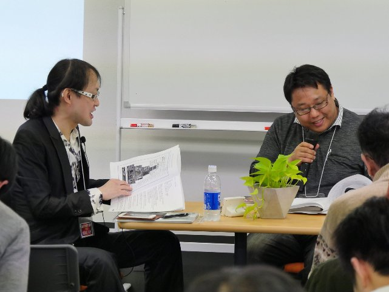
清涼院 : この 『 Towerld 』 というシリーズは、 Doctor Deicide こと 神 狩り博士という謎の作者なんですけれど、エージェント工刀 （くぬぎ） さんがその代理人なので、工刀さんも、ご登場いただけますか。
（エージェント工刀氏、登場）
清涼院 : ぼくは彼 （工刀氏） が神狩り博士じゃないかと、ずっと疑っていて、本人は否定し続けているんですが。今日は、そのあたりの謎も解かれるのかもしれないですね。
坂嶋 : とりあえずタイトルは（パワーポイントのスライドを示しながら）「塔世界の歩き方 Travel Guide to Towerld 」です。
清涼院 : みなさん、お手元の配布資料 9 ページ にも同じものがあります。配布資料を見ながらでも、スライドを見ながらでも、どちらでも大丈夫です。
坂嶋 : 9 ページに スライド 12 枚ぶんと、その あと に も資料が 13 ページまで 載っています。
清涼院 : すごい大作の資料を、ありがとうございます。
坂嶋 : 先ほど話のあったこの （配布資料 14 ページに載っている） 同人誌を出した時に、 The BBB の広告を載せたんですね。その時の 『 Towerld 』 の広告が資料 10 ページにあるんですが、こ の広告 を書いた のは 2016 年 8 月で した 。
清涼院 : この広告には、度肝を抜かれました。
坂嶋 : でも、この 時点では たしか、 3 話くらいまでしか読んでいなかったんです。今から思えば、まだまだやれたな、と。
清涼院 : まあ、 3 話だと、まだ実は（物語の本筋が）始まっていないですもんね。
坂嶋 : そう。その後、読み進めて、 どんどん 驚いたので。基本的に日本語と英語の両方が同時刊行されるのは他の The BBB 作品と同じですけれど、 『 Towerld 』 に関しては、英語も日本語も神狩り博士という方が書かれていると。正体不明の。
清涼院 : エージェント工刀さんじゃないかと、ぼくは疑っているんですが。本人がどうも頑なに否定するんで。
工刀 : いや、その証拠がないじゃないですか。証拠を見せてから、そういうことを言ってください。
清涼院 : 証拠はないんですよ ...... そこが弱いところで。
坂嶋 : その神狩り博士がエージェント工刀さんに原稿を送って、そこから The BBB に、という流れ なんですよね 。一応、 いま（ 2017 年 11 月） までに 14 話 が 刊行されています。基本的には主人公の Hector_1304 が、自分 の 暮らしている （塔世界の中の） フロアが水 に 浸かってきたので、上の階に行こう、と。それなら、ただひとつ上に 進む だけじゃなくて、どこまで塔が続いているのか確かめに、いちばんてっぺん を目指そう 、という話です。ぼくは 3 話まで読んだ時点で、言葉 で かなり遊んでいるという印象 を受けたので、「記述師」に「ノベリュージョニスト」とルビをふったり、あと、「ふたつの世界」に「 two world 」で、 『 Towerld 』 とちょっとかけてみたり、という広告をつくってみたんですが、今回、最新の 14 話までぜんぶ読んで、適宜、英語版も参照しながら読んだら、やっぱり、言葉遊びより 、 まず物語がある。先に物語 various story があって、その あと に verbal play （言葉遊び）が来る、ということに気づきました。物語については、ふつうに冒険をしながら、いろんな困難を乗り越えながら、塔の上を目指していく、という基本線が あるのですが、その中にアクションとか、ミステリーっぽさとか、恋愛とか。あとは、バリアフリーのフロアがあったり、女性のみのフロアがあったりと、社会風刺や、社会の縮図みたいなところを意識したところがいろいろ出てくるので、ただ単に冒険とかアクションとかだけじゃなくて、いろんなものが詰まっているな、というのが第一印象でした。そのまず第 1 話なんですが、簡単に説明すると、主人公がどういう状況にいるか、今どういう暮らしをしていて、どういう能力を持って い て、という Actual Status （現在の状況） がまず示され る。で、行く手を阻むものや、困難な状況がある。これが、 Keeper 。それを何とか突破して上の階を目指す、 Breakthrough 。つまり、 A と K と B が並んで出てくるわけです。
清涼院 : これは某アイドルを意識して？ （笑）
坂嶋 : そうですね （笑） 。それがまず第 1 話で出てくるわけです。ただ、これに関しては、 1 話だけじゃなくて、その後も、スライド （配布資料 9 ページ） の 5 枚め、さっきは第 1 話の中にその 3 要素が詰められていましたけれど、その次は 2 話が A 、 3 話と 4 話が K で、 4 話 と 5 話 で B 、 ブレイクスルーが来る 、 という感じで、繰り返されるわけです。ここまでではっきり言えるのは、無料の 3 話までだけだと、もったいない、ということです。 3 話だと、 AKB サイクルの K の途中で終わってしまうので、とりあえず、 B の 5 話まで読むと、はっきりとこの物語のサイクルがわかって、楽しみ方がわかっ てくるかと思います。
清涼院 : なるほど。
坂嶋 : さらに、そのサイクルに関しても、 （ AKB サイクルの） Part 1 、最初の第 1 話から始まる 3 つよりも、 Part 2 の 3 つのほうが面白いし、さらに、 Part 3 の 6 話から 7 話にかけても、どんどん面白くなってくるので、そこを目指して読んでいただけると。
清涼院 : どんどんスケールが大きくなっていってますよね。これは 実際に 読ん だことのある 我々が証言するしかないのですが。
工刀 : でも、正直、 6 話と 7 話はスローダウンしません？私が言うのもあれですけれど。 ただの（登場人物同士の） 痴話ゲンカと言うか ......
清涼院 : エージェントが、そんなこと言っていいんですか？
工刀 : ああっ、ごめんなさい。
清涼院 : まさか エージェント から ダメ出しされるとは （苦笑） 。
工刀 : いやいや、私も関わっているので、つい厳しくなっちゃうんですよ。
坂嶋 : 基本的には困難を乗り越えていくわけなんですけれど、主人公がすごい力を出して解決しちゃったとか、敵を倒しちゃった、ということは まず なくてですね。 事前 に、主人公には、こういう能力がある。で、強い敵を倒すには、どうしたらいいか、主人公の能力をどう活かせば、相手の裏をかいて倒せるか、というふうに、頭で考えて、論理的に敵を倒していく。壁を壊していく。という感じなので、伏線を活かして問題を解決していく、広い意味ではミステリーに当て はめ てもいいんじゃないか と 捉えています。で、基本的に 頭で考えながら戦って敵を倒していくので、ジョジョ（『ジョジョの奇妙な冒険』）とか、『 HUNTER X HUNTER 』などと 似ている 構造 じゃないかな、と思いました。
工刀 : 主人公は正直言って、超能力とか特殊能力はないですよね。
坂嶋 : ないですね。
清涼院 : なにもないですね ...... いや、なにもない、というのは、おかしいですが。
工刀 : いや、なにもないっすよ。正直に言って。うん。作者も、そうなんじゃないですかね。
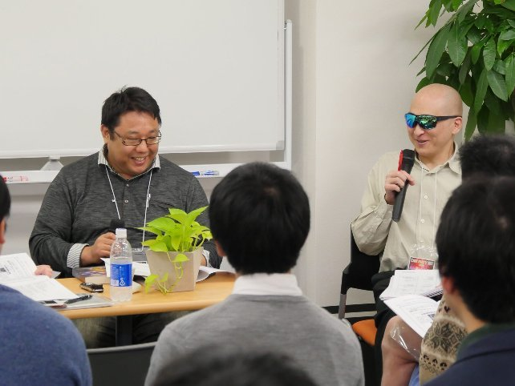
坂嶋 : あと、主人公に関して言えば、特にスライドには書いていないんですが、 " 防御に特化している " というところが面白くて。攻撃力とかは、さほどではないけれど、守ることに関して強い。で、守ることに関して強い主人公が、どうやって攻撃するのか、相手の攻撃を受けて立ち向かっていくのか、というところが本当に面白くて。それこそ、最近の 13 話、 14 話あたりで、もうとんでもないことに。とんでもない敵に立ち向かっていくので。
清涼院 : 最初からは想像できないんですよね。最初の Level 0001 から 0003 あたりから考えると、今は 、 もうすごいことになっていて。
工刀 : たしかに、そうですね。どんどん流れが変わっているような。
坂嶋 : どんどんスケール・アップしている気がするので、さっきの工刀さんがおっしゃられた 6 話、 7 話あたりをクリアした先に出る ......
清涼院 : やっぱり、バリアフリー階層に入ってから、一気にすごくなりましたね。
工刀 : それはありますね、たしかに。
坂嶋 : では、まず 『 Towerld 』 の魅力のひとつめ、物語については、いったんこ のあたり で終わり、ということで。次から言葉遊びについて話していきます。おもに、言葉遊びについては、カバン語、ダブル・ミーニング、頭韻、脚韻と、大まかに言って 4 つくらいあると思うんですが。それに関する資料がほとんどを占めていまして、 配布資料 11 、 12 、 13 ページ に 、その例を、 だいたい 3 話くらいまでの中から 引用しました。 ダブル・ミーニング と 脚韻に関しては、たし か、 2 話か 3 話までのあいだから抜き出しただけで、これだけあるので。ひ とつひとつ読んでいただく必要はないのですが、たくさんある、ということを感じてほしくて、つくりました。では、カバン語から説明していきます。ふたつの言葉を混ぜたもの、ということで、「 Towerld 」 とか、作者 ・神狩り博士 の 「 Deicide 」 自体も、元々はカバン語としてつくられて、ある程度、一般化したようです。あと、 1 話めから出てくるこの "Shieldian" という存在が、けっこう面白い英単語、合成語だな、と思っていまして。これは shield と guardian で大丈夫なんですよね。
清涼院 : そうですね。
工刀 : それは間違いないです。
坂嶋 : 日本語では " 階段衛兵 " なので。さらには、階を上がっていくごとに、 " 怪貌偶 " （カイボーグ） とか。 この " 怪貌偶 " に 、けっこう驚きまして。元々はサイボーグともかけているんでしょうけれど も 。
清涼院 : 日本語でも英語でも言葉遊びになっている、ということですね。
坂嶋 : そうですね。 " 無礼屍体奴 " （ ブレイシタイド ） も、そうですけれど 。 " 怪貌偶 " のインパクトの強さと、おどろおどろしさというか、もう 名前を 見ただけで悪そうで、力強い奴が出てきそうな雰囲気 が 印象的でした。次にダブル・ミーニングなんですが、日本語と英語を読める方は並べて読んでいただければわかるんです けど 、日本語と英語で、ぜんぜん違う内容が書かれているんですね。それがたぶん、英語と日本語それぞれ作者が書いている ゆえの特徴で。要は、 訳しているわけじゃなくて。
清涼院 : そうなんです。それがやっぱり、 『 Towerld 』 の特徴だと思います。訳しているわけじゃなく、別のことを書いてる場面もある、という。だから、必ずしも （英語と日本語が） 1 対 1 では対応していないんです。
工刀 : でも少しだけ重なっていますよね。
清涼院 : 基本は一緒なんですけれど。
坂嶋 : 言葉遣い、会話のセリフも、わりと違っている上、日本語だと乱暴な言い方っぽい のに 、英語だと、ちょっと違うニュアンスにも読め る ところがあったような気がします。 配布資料の ダブル・ミーニングの最初、これは魚市場での話なんですが、「神経を 『サカナ』 でした （＝逆撫でした） 罰だ」 、 あと、「 魚（ギョ）ッ でも 魚（ウオ）ッ でも」とか。ダブル・ミーニングを使っているんですが、英語だとぜんぜん違って、韻を踏んでいるという形がけっこう多いです。まあ、英文のほうは、ぼくはぜんぶを読んだわけではないので、断言はできないんですが、日本語でこういうダブ ル・ミーニングが使われている場合、わりと英文のほうでは韻を踏んでいるところが多かった気がします。このダブル・ミーニングで挙げた項目の中でも、いくつかあります。最初の「『サカナ』でした罰だ」とかも、言い方を悪くすれば親父ギャグとも受け止められてしまう可能性があるんですが、たとえば、主人公が戦っている敵が言うセリフだったりすると、主人公はそれについて「くだらないことを言ってる」とか、読者が読んでいて共感できるような形でツッコミが自然と入ってくるんですね。読者の視点に寄り添って、そういうギャグに対して返しがあるので、共感しながら読めて。で、面白いギャグの部分は、面白いふうに書かれている。そこ（ダブル・ミーニング）は、読者の視点に寄り添って、読者の心境を主人公とかが代弁してくれているので、そこは安心して読んでいけると思います。
清涼院 : 持ち時間的には、あと 3 分くらいになっているんですが。
坂嶋 : 3 分ですか !?
清涼院 : 早いですよ。 20 分は、あっという間なので。
坂嶋 : あとは、頭韻、脚韻に関しては、そんなに。
清涼院 : 配布資料に書いてあることは、見ていただければ大丈夫なので。今、お話を伺っていて、ぼくが前から感じていたのは、 『 Towerld 』 シリーズを読者に届ける難しさというのは、バイリンガル小説なんですよ。世界でも例がないくらいの。だから日本人読者にとっては、英語版が、めちゃ く ちゃ難しいんです。で、英語で読む読者にとっては、日本語版がめちゃ く ちゃ難しくて。だから、両方楽しめる人というのは、たぶん、バイリンガルしかいないんですよ。それが、この作品を届ける難しさだな、と思っていて。そのあたり、坂嶋さんは、どう思います？
坂嶋 : いや、たしかに、難しいことは難しい。両方を読むとわかるんですけど、特に英語に関しては、ぼくもスラスラ読めるほどの英語力 は ないので。だからそこはまず、日本語だけを届ける、という形でいいんじゃないかと。日本語だけ、英語だけを、それぞれの読み手に向けて売るという姿勢でいて、さらに、興味を持った人には両方、という。ぼくもそこまで英語で読みたいとまでは思っていないんですが、ただ、日本語のギャグとか、言葉遊びの部分が英語でどう書かれているのかというのは、とても気になったので。
清涼院 : 両方わかると、めちゃ く ちゃ面白いんですけど、たぶん、両方わかる人がほとんどいないな、とい うの があって。そこが、届ける難しさをすごく感じているんですけどね。
工刀 : まあ、でもあの、そうですね。 たとえば、 2 台のパソコンなりタブレットなり同時に開いて同時に読めば、なんとかなると思いますので。同時に読まれることを、おすすめいたします。なんとかなりますよ。
清涼院 : 今日は、英語の達人みたいな方も何人か参加してくださっているんで、英語に 自信 のある人は、ぜひ読んでほしいな、と思いますけどね。英語版を。
工刀 : そうですね。それであの。ツッコミどころを見つけたりとか。そういう遊びも可能だと思いますので、よろしくお願いします。
清涼院 : 持ち時間的には、もうあと 1 分になってしまったので。坂嶋さん、 『 Towerld 』 について、言っておきたいことが、もしあれば。
坂嶋 : とりあえず、いつか終わりがくるんだろうか、というのが、いちばん気になっていることです。それと、こんなに、資料 で 3,4 ページ使うほどの言葉遊びがありながら、 人名 に関する 言葉 遊びが、あんまりない。メインの人たちもないし、フェイ・ミニストゥレスという、フェミニスト階層の人たちの名前とか。あと、レギュラー・キャラでも、ウェンディに関しては、ちょっと出てきましたけれど、それ以外は、ほとんど遊びがないので。もしかしたら、今後出てくるかもしれない、という のが、今後に期待のところです。で、ちょっと予想して書いたのが、この配布資料 9 ページの最後にあります。 Hector_1304 。 1304 はよ くわからないのですが、 Hector に関しては、合成語じゃないかと。 Hec が地獄の歪曲語。 -ctor で、 constructor の略語。ということで、もしかしたら、頂上まで登った Hector は、なにかまたさらにつくっていくんじゃないかと。塔をつくっていくんじゃないか、という予想をして終わりたいと思います。
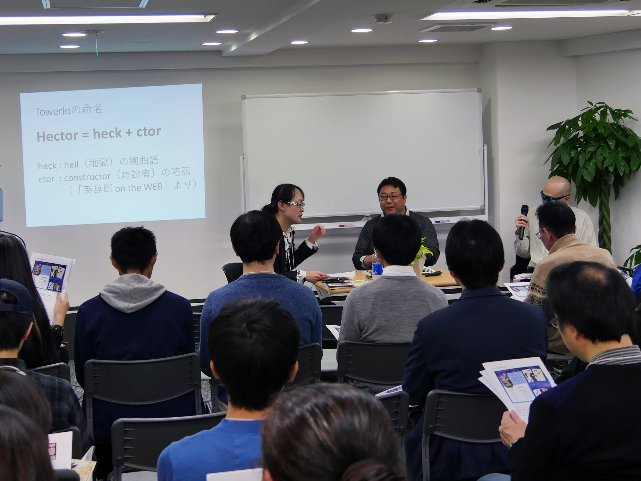
清涼院 : ありがとうございます。
工刀 : いや、ずいぶん深いところまで掘り下げてらっしゃいますけれど ......、 AKB の件といい、今の Hector とか ...... 。もしかして ...... 坂嶋さんが、神狩り博士なんじゃないですか。
清涼院 : 坂嶋さん ...... 坂嶋さんが神狩り博士ですか !? 実は？
坂嶋 : いや、そんな ことは...... 日本語ならまだしも、英語では小説は書けないですから。
清涼院 : そういうフリをしている、とか。
工刀 : 実は、って感じですね。
坂嶋 : いやいや、まだ TOEIC も 660 点なので。まだまだ上が。
清涼院 : TOEIC 受けてましたね。そう言えば。
工刀 : それ、 TOEFL660 点の間違いじゃないんですか。あ、それは満点か。
坂嶋 : いや、違います。
清涼院 : では、坂嶋さんのコーナーはこれで終わりまして、その次のコーナーまでやってから休憩に入ります。坂嶋さんにも、このままいていただいて。皆さん、配布資料の 14 ページをご覧いただけますか。こ の同人誌 は、去年、出されたものなんですけれど、坂嶋さんのサークル 「騙り部（かたりべ）」さんから 今日、何人か参加してくださっているんですけれど 。 去年 （ 2016 年） 、 「 清涼院流水デビュー 20 周年記念インタビュー 」 という 企画をこの同人誌の中で してくださって。で、ぼくは去年の本を出す予定が延びて、今年 （ 2017 年） というか来年 （ 2018 年） 1 月になってしまったので、去年、 20 周年の節目にインタビューを受ける機会がなかったん です。結果的に、ぼくとしても、すごくいい記念になって。ほんとに、ありがたかったです。ありがとうございました。そのほかにも、坂嶋さんが、ぼくの TOEIC 本を参考にして TOEIC に挑戦する企画とか、今日参加されている松沢さんのコミックとかも読めるので。もし興味のある方は、この後、休憩時間とかに、ご覧いただければと思います。
坂嶋 : 興味のある方は、お願いします。
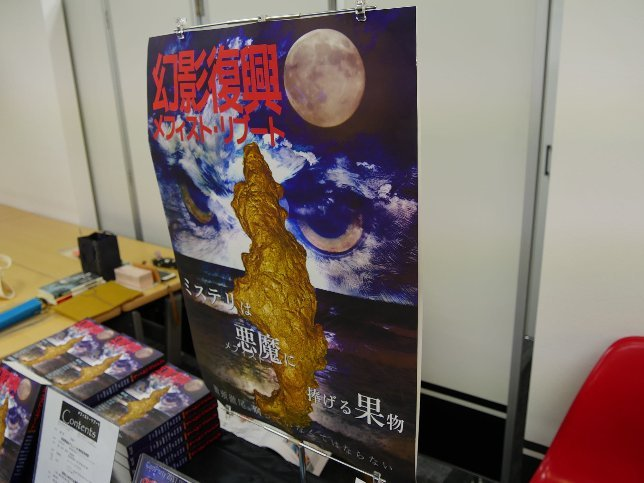
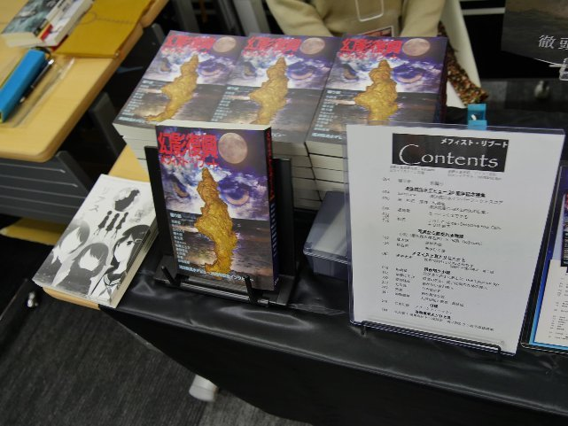
清涼院 : 皆さん、前半ありがとうございました。それでは今から、いよいよ後半を始めさせていただきます。
ターニャ : 「 蘇部健一先生が語る 「 懸賞金つき読者参加企画 『 小説 X 』」。 先生、お願いします。
清涼院 : 蘇部健一先生、よろしくお願いします。皆さん、拍手でお迎えください。
（蘇部健一氏、登場）
清涼院 : お手元の配布資料は、 15 ページをご覧ください。今日、蘇部さんに 『 小説 X 』 について 、お話しいただきたく。
蘇部 : いや、すみません。
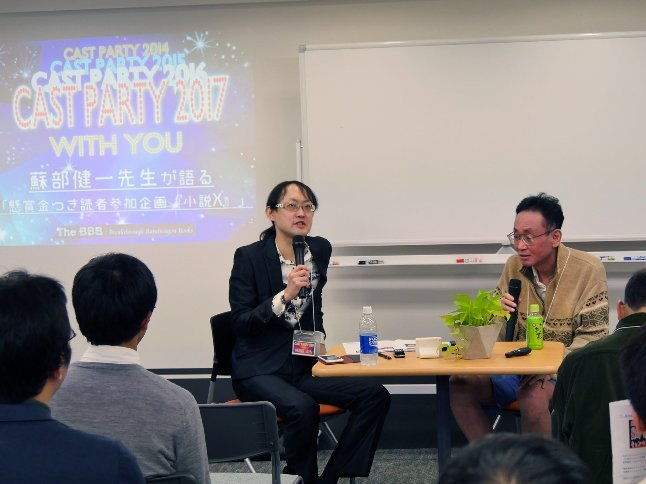
清涼院 : こんな、ねらったかのようなタイミングで。キャスパのためにやっていただいたような。まった く の偶然なんですけどね。キャスパの日程を決めた時点では、ぼくも 『 小説 X 』 の企画を、ぜんぜん知らなかったですし。
蘇部 : そうですね。私も、ほとんど 1 回しか話を聞いていないような状態で 、 清涼院さんから偶然メールが来たので。
清涼院 : たしか、「蘇部さん、今年もキャスパに遊びに来ていただけませんか」とメールを出したその日に、ちょうど小学館さんと打ち合わせでしたよね。
蘇部 : あの日が 2 回目で、具体的な話を聞いた、みたいな。
清涼院 : 『 小説 X 』 は、皆さん、この企画はご存知でしたか？この配布資料 15 ページ にも書いてますけれど。ご存知だった方は ...... あ、やっぱりけっこういらっしゃいますね。浸透してるじゃないですか、蘇部さん。
蘇部 : The BBB が宣伝してくださったおかげで。
清涼院 : いえいえ。 皆さん 、ご存知だったということは、 『 小説 X 』 の特設サイト を ご覧になったと思います。あそこの蘇部さんの文章がすごくて。蘇部さん節全開で。
蘇部 : そうですね。
清涼院 : ああいう文章を書かせたら、やっぱり蘇部さん、すごいですね。
蘇部 : いや、あの 「 読者への手紙 」 は、担当さんがけっこう厳しい人で。 2 回、没になって。
清涼院 : あれは、 2 回直した 後 のものなんですか？
蘇部 : そうなんです。笑わせろ、と言われて。
清涼院 : 笑わせろ、というのも、すごいですね。
蘇部 : 美人の担当さんなんですけど。すごい厳しい方なんで。
清涼院 : じゃあ、最初のふたつのバージョンは、そうでもなかったんですか。ふつうの著者の言葉で？
蘇部 : 一応、あんな感じだったんですけど。もっと悲惨な状況を書いてくれ、みたいな。
清涼院 : なかなか厳しいですね。
蘇部 : いや、そんな、書きたくないんだけどな、と思ってたんですけれど。
清涼院 : ぼくも、すごいな、と思いました。あの赤裸々な感じが。で、この作品は、蘇部さんの中でも特別な思い入れがおあり、というか。だいぶ以前からご用意されていて。
蘇部 : そうですね。あの、一応、 『 小説 X 』 って、小学館の「小説丸」という小説のサイトから アクセスできて 、あと 2 週間 （ 2017 年 12 月 7 日まで） 、全文無料で読めるようになっているんです 。「 ブクロ グ（通信）」 のインタビューも受けて、そこには書いたんですけど 、 清涼院さん、ご存知だったかな。毎年 1 回、メフィスト賞同窓会というのがあって 。 その同窓会で、よく冗談 ま じりに 、 絶対に売れないとメフィスト賞作家の中でも思われていた 、 乾 （いぬい） くるみさん、真梨幸子 （まり・ゆりこ） さん、浦賀和宏 （うらが・かずひろ） さん 。 売れないと思っていたのに、その 3 人が売れたと。
清涼院 : ああ、よくそのお話はされていますよね。
蘇部 : で、 3 人に共通するのは、 『 イニシエーション・ラブ 』 、 『 殺人鬼フジコの衝動 』 、 『 彼女は存在しない 』 ...... みんな、 " 叙述トリック " （註 : 巧みな記述で読者を真実と は別 方向に誤導し 続け 最後に 真実を明かして 驚かせる手法）で。冗談交じりに、クロケン （黒田研二） さんとか、浅暮 （三文） さんとかと、「叙述トリックを書いたら、俺たちも売れるぞ！」みたいな話をしてたんですけど、私はそのことをずっと真剣に、何年も考えていて。で、一昨年 （ 2015 年） の頭くらいに、 『 小説 X 』 のトリックを思いついたんですけれど、あのトリックを使う必然性のあるストーリーが、なかなか思い浮かばなくて。で、 1 年半くらい、何度も挫折しかけたんですけれど、去年の夏頃、うまくアイディアが浮かんで、やっと書けて。で、ラスト 1 行で驚かせる叙述トリックが、なんとか完成したんですけれど。
清涼院 : これまでの作品の中で、手応え的には、どんな感じですか？ベスト 1 ですか？それとも、ベスト 3 に入る、とか。
蘇部 : ラストの衝撃度では 1 番だとは思いますけれど。
清涼院 : ぼくはね、ただ、この 企画が発表されるだいぶ前に、この 作品を蘇部さんから読ませていただい ていた んです。ぼくは、 （その当時の） タイトルで犯人の見当がついてしまって ...... 。
蘇部 : あ、そうなんですよ。
清涼院 : 当時、ネタバレタイトルだったんですよ、実は。ぼくも蘇部さんのビックリ系の話が大好きで、 The BBB から出させていただいている 『 The Hopeless Dream （邦題 : 叶わぬ想い） 』 という作品、お手元の 配布資料の 5 ページに も 載ってい ます。 ここで「人類史上 もっとも 意外なミステリー」と紹介文で書いてしまったんですけれど、ぼくは、この作品は、このくらい驚いたんです。
蘇部 : ありがとうございます。
清涼院 : 蘇部さんも、「私の作品 の中 で （意外性では） 1 番だと思います」と、おっしゃっていて。ぼくも読ませていただいて、そう思って。ぼくとか蘇部さんは意外なミステリーが好きで、そういうのは、けっこう昔から接してきて 。 免疫はついているんですが、こればっかりは本当に驚いた、と言いますか。これは英語版でしか出していないんですが、ぼくが英訳して、けっこう簡単な英文で書いているつもりなので、今日いらっしゃって い る 皆さん には、ぜひ読んでいただきたいです。ほんと、衝撃の作品です。蘇部さん的には、 『 小説 X 』 は、あれより上ですか？ぼくも、タイトル で察しがついていなければ、もっと驚けたのに、と思うんで、残念だったんですが、
蘇部 : すいません。
清涼院 : だから、「タイトルは変えられたほうがいいんじゃないですが」と、ご提案したくらいで。
蘇部 : そうなんです。実は、 『 小説 X 』 の出版が決まらない時に、清涼院さんに泣きついて、原稿を読んでいただいて、で、もしぜんぜんダメだったら、 The BBB で公開してもらえませんか、と。いいですよ、と快諾していただいて。たぶん、お願いすることになるな、と思っていたんですけれど、小学館から意外な形で話が来て。で、清涼院さんのアドバイス通りタイトルを変えようと思って 。 担当さんが反対しようが何しようが、トリックがバレちゃうかもしれないんで、変えます、と言おうと思ったら、担当さんが「タイトル、募集します」って、いきな り言ってきたんで。え、そうなの !? と。変えるつもりだったから、いいけど、みたいな。
清涼院 : 現在の集まり状況については、ご報告はあるんですか？
蘇部 : それがね、あるんですけど ...... 。
清涼院 : 差し支えのない範囲で。
蘇部 : 私はぜんぜん差し支えないんですけれど、小学館のサイトだと、 8000 アクセスで、タイトルの応募が 300 。何日か前ですけど。
清涼院 : すごいじゃないですか。
蘇部 : で、読んでる人が、その小学館のサイトじゃなくて、 Amazon の Kindle とか楽天の Kobo とかで読んでくれてる人がいるのかもしれなくて。 Amazon の Kindle は、無料のランキングで 4 位とかで。
清涼院 : 2 位になっていたみたいですけど。
蘇部 : 最初 2 位だったみたいで。で、それからずっと 4 位で。 3 位が 『 世界美術館 』 で、それに負けてるらしくて （笑） 。それがなかなか抜けないって、担当さんがぼやいてましたけれど。で、あと、 『 Smart News 』 という 2500 万人登録している アプリ だと、全文無料で横書きで読めるようになっているんです 。『 Smart News 』では 、昔のケータイ小説みたいに毎日ちょっとずつ読む仕組みになっているらしくて。 『 Smart News 』は 毎日ニュースを見る媒体だから、そう した のかもしれないんですが、そっちでどのくらい読んでくれているかも、ちょっと わからなくて。小学館の「小説丸」の『小説 X 』 のサイトで、 twitter とかもやることになっちゃったんですけど、 twitter のフォロワー数が 100 とかで。ぜんぜん手応えがなくて、感想も集まらないし。なんで、そんなに反応ないのかなと。だから、私としては、ぜんぜん手応えがなくて。ちなみに、 『 小説 X 』 というのは、ご存知かどうかわからないんですけど、新潮社から （ 2017 年） 8 月に出た 『 ルビンの壺が割れた 』 という企画の丸パクリでして。それは、 7 月に全文を 2 週間、無料公開して、帯のコピーを募集して、その結果、 70 万 PV 。 6 万通の応募 があったという話なんだけど、私の『小説 X 』 は、ぜんぜんそんな数字にいかなくて。新潮社、 " 盛ってる " んじゃないか、という。
清涼院 : まあ、その可能性はありますよね。
蘇部 : 「ルビン」の twitter を見ると、絶賛の画像がドワーッと出てきて。でも、読書メーターの感想を見ると、けっこうぼろくそのが出てきて。新潮社、やってんな、という気がしないでもないですけど。
清涼院 : 業界の方も、いろいろ仕掛けてますからね。
蘇部 : 小学館、まじめすぎて困るな、というのはあるんですけど。
清涼院 : でも、 300 くらいは一応、もう案が来ているんですね。
蘇部 : そうですね。
清涼院 : 実際にご覧になっているんですか？
蘇部 : いや、まだで。一応、審査員のひとりには入れてもらえるみたいで （観客笑） 。
清涼院 : それはそうでしょう。作者なんですから。勝手に決められたら困りますよね。
蘇部 : でも、 5 作の候補を選んで、そのあと、さらに投票でタイトルを決めると。で、あと 2 週間で （ 2017 年 12 月 7 日に） 全文無料公開は終わっちゃうんですけど、 5 作の候補が決まってから、投票するために読まないとわからないから、さらに 1 週間、小学館のサイトでは無料で読める、ということらしいんですけど。
清涼院 : 最後は、じゃあ、その最終候補の投票で決まるんですか？
蘇部 : らしいですね。だから、嫌なのを 5 作残さないようにしないと。
清涼院 : そこまでいったら、盛り上がりそうですけどね。
蘇部 : そうですね。でも、なんか twitter のご意見でもあったんですが、いっそのこと 『 小説 X 』 のほうがいいんじゃないかと。
清涼院 : 『 小説 X 』 が、実はもう良いタイトルなんじゃないか、と？
蘇部 : 表紙も「 X 」のほうが、インパクトあるんで。まあ、そうなると「文庫 X 」の丸パクリになるんですけれど （註 : 「文庫 X 」とは、 2017 年 7 月、岩手県盛岡市の「さわや書店フェザン店」の書店員さんが、どうしても読んでほしい本に「文庫 X 」特製カバーをつけて本のタイトルと著者名を隠して話題となり大ヒットし、他の書店さんにも波及した企画）。
清涼院 : 東野圭吾さんの 『 容疑者 X の献身 』 とかもありましたからね。
蘇部 : そうですね。 （中村文則さん著の）『教団 X 』 もあるし。
清涼院 : 蘇部さん、こういうキャンペーンみたいなことは初めてですか？
蘇部 : もちろん初めてで。もうとにかく、出版社が私のために本を売るための努力を 1 ミリたりともしてくれるとは、まったく考えていなかったので。
清涼院 : 蘇部さん、ほんとにすごいんですよ。新刊を出した 後 の書店さん周りを、ご自分ですごく精力的にやられていて。毎日何軒も、スーツを着て汗まみれになって、や られて いて。しかも、ご自分でポップをつくられたり。その情熱たるや、本当にすごくて。
蘇部 : 要するに、作家が本を出しても、平積みになって、 1 週間経つと返品されてしまう今の状況なので。
清涼院 : そうですね。
蘇部 : だから私は、本が出るたびに、 80 軒とか 90 軒の 1 都 3 県の書店を周って、紙のポップだと 弱いの で、手作りのポップで、売り場の担当さんにご挨拶して、 「 置いてもらえませんか 」 とお願いすると、けっこう長いあいだ、置いてもらえるので。たぶん、それをやってなかったら、今まで、もっと売れてなかっただろうから、だから、 『 小説 X 』 は、もっと早い段階で没になっていたと思うんですよね。
清涼院 : 書店員さんで、けっこう 蘇部さんを 応援してくださる方 が 、いらっしゃるんじゃないですか。以前の作品でも、帯に書店員の方の推薦コメントがあったりしましたよね。
蘇部 : そうですね。顔なじみの書店員さんは、もう何十人もいるので。
清涼院 : 書店員さんが味方をしてくださると嬉しいですね。作家としては。ぼくとか蘇部さんは、本当にミステリーの幸せな時代にデビューしたんですよ。昔、ぼくたちは講談社ノベルスというところからデビューして。
蘇部 : そうですね。
清涼院 : 講談社ノベルスで、メフィスト賞だったら売れる、という時代もあって。あの頃を知っていると、今は本当にすごい時代になったなと思いますよね。
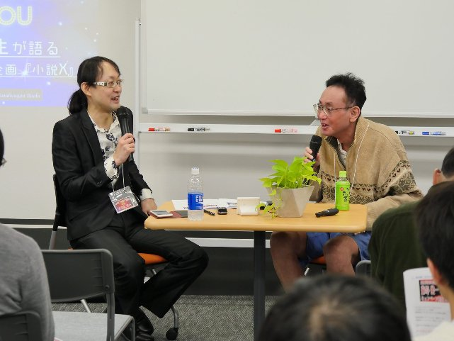
蘇部 : とにかく今、ほとんどの作家は、新作を書いても、まず出してもらえない。
清涼院 : そう、出してもらうのが、今、めちゃめちゃハードル高くなりましたからね。
蘇部 : いや、ちょっと前までは、初版 4000 部だよ、と、みんな、ぼやいてたのが、今は出してすらもらえない状況になってるから。
清涼院 : ほんと、そうですね。
蘇部 : 初版 4000 部で出してもらえても、全国 100 店の書店さんに 1 週間平積みになって返品で、増刷の可能性は、もう 1% か 2% くらいだと思うんですよね。それよりさらに悪くなっているわけですから、ほんと、悲惨な状況で。
清涼院 : でも、今日、作家を志してらっしゃる方もいるんで、夢のある話もすると、そんな中でも成功例はあって。ぼくらはメフィスト賞という新人賞の出身なんですけれど、第 1 回受賞者が森博嗣さんで、いまだにスーパースターで。第 2 回がぼくで、第 3 回が蘇部さん で。 第 4 回の乾さん は 、 『 イニシエーション・ラブ 』 という作品で、 皆さん 、ご存知だと思うんですが、一夜にしてミリオン・セラー作家になられましたからね。ああいうのは本当に成功例で。ぼくらも、乾さんとは毎年、メフィスト賞の飲み会で会うんですけれど、身近な人が急にドーンと売れ るのを見ると、なんか、まだ捨てたもんじゃないな、とは思いますよね。
蘇部 : 乾さんなんて、ほんと、絶っっ対に売れないと思いましたからね （観客笑）。
清涼院 : さっきお名前の出た真梨幸子さんも、講談社ノベルス市史上最低部数のスタートからで、そのあと、何十万部も売れましたもんね。「フジコ」で。
蘇部 : 元々、彼女はイヤミスのデビューだったけど、その頃、「イヤミス」という言葉はなくて、その後、湊 （みなと） かなえさんの 『 告白 』 が出て、「イヤミス」という言葉ができて。そのあと、「殺人鬼フジコ」、という流れがあったから （註 : 「イヤミス」とは、読了した後に読者をイヤな気分にさせる傾向のあるミステリーの通称）。
清涼院 : 厳しい時代なんですが、ハマった時のブレイクの仕方も、すごいんですよね。
蘇部 : そうですね。だから今、スマホが普及して 。 みんな、 LINE だインスタだ、無料のゲームだとかやってて 。 小説を読む人はいなくなっちゃったけど、 1 回ブレイクしちゃえば、みんなが読む、みたいな。
清涼院 : いちばん 売れてるようなやつは、読むんですよね。
蘇部 : ですね。
清涼院 : あと持ち時間が 2 分くらいなんですが、蘇部さんのほうで言い残したことがあれば。
蘇部 : いや、今日、 The BBB のイベントなのに、私の本の話で申し訳ないんですけど。
清涼院 : いやいや、そんなことはないですよ。ぜひ、ここらいらっしゃる 皆さん にも、応募していただきたいですね。
蘇部 : そうですね。
清涼院 : 無料の作品を読んで、タイトルを応募するだけですからね。
蘇部 : まだ 300 通しか来ていないんで、候補の 5 作に入って 1 万円もらえる可能性は高いと思うので。ぜひ、応募してください。
清涼院 : ちなみに、今日のお話を伺って、「私、応募してみよう」と思ってらっしゃる方は、ちょっと手を挙げていただけますか。お ...... これは、ほとんど全員じゃないですか。
蘇部 : ありがとうございます。
清涼院 : じゃあ、この中から最優秀賞が出る可能性も。
蘇部 : そうなったらいいですね。あと、あの、とにかく twitter を始めることになったんですよ。生まれて初めて。ただ、フォロワーの数が、小学館の社を挙げてやってるのに、 100 人とかで。
清涼院 : では、 twitter やられている方は、ぜひ蘇部さんをフォローしていただいて。拡散していただいて。
蘇部 : どっちかと言うと、 『 小説 X 』 より、 twitter を見て「いいね」を押してほしい、という。
清涼院 : twitter は 『 小説 X 』 というアカウント名ですよね？「蘇部健一」ではなく。
蘇部 : 『 小説 X 』 です。
清涼院 : みんな、わかってないんじゃないですか。
蘇部 : いやいや、最初に「蘇部健一」と書いてあるので、それはわかります。毎日、何を食べたか、写真をあげてるんですけど、「いいね」が伸びないんですよ。
清涼院 : これをきっかけに、ぜひ 皆さん で、蘇部さんファンクラブという感じで。
蘇部 : 『 小説 X 』 が面倒臭かったら、 twitter だけでも。
清涼院 : せめて、「いいね」はしてほしいですね。
蘇部 : 「いいね」押してください。
清涼院 : 蘇部さん、本日は、ありがとうございました。
蘇部 : こちらこそ、ありがとうございました。
（註 : その後、同作品は『小説 X あなたをずっと、さがしてた』というタイトルに決まり、 2018 年 1 月に単行本と電子書籍版が刊行されました）
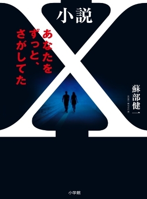
ターニャ : 「 秋月涼介先生が語る 「 ジャンル別の Best レストラン 」」。 秋月先生、お願いします。
清涼院 : 先ほど言い忘れたのですが、秋月さんは写真 NG なので、写真はナシで、お願いします。秋月さんは先ほどもご登場いただきましたので、再登場ですね。皆さん、お手元の 配布資料 の 16 ページにも同じものがありますので、スライドか資料か、見やすいほうをご覧ください。秋月さんは、プレゼンでも、 『 The Sifted 』 のほうですからね。 『 The Gifted 』 じゃなくて。ラスボスが登場するのも 『 The Sifted 』 だし。
秋月 : 『 The Gifted 』 のプレゼンをしようかな、と思ったら、流水さんから、「それは危険だから」と言われまして。ちょっとディープな世界に入っていくから、と言われまして。 『 The Sifted 』 のほうを紹介させていただきます。まず、 『 The Sifted 』 なんですけど、これは 『 The Gifted 』 のスピンオフになっていまして、毎週土曜日に （ The BBB の Facebook ページで） 更新される、グルメ・リポートとなっています。最初、お話をいただいた時に、どう書こうかな、と思ったんですけれど、モノローグ （＝ひとり語り） で書くと自分がけっこう出ちゃうかな、と思ったので、キャラクターを使っ てダイアローグ（＝対話形式）で書いて。一応、「秋月」という人がいるんですけれど、完全な自分ではなくて、まあ、ボケもツッコミもできるようなキャラクターとして配置して、 4 人の 『 The Gifted 』 のキャラクターたちと ...... あ、ヨマが入ったので 5 人ですね ...... 語る形式になっています。ジャンルとしては、ラーメンと、和食、洋食、中華、カレーという 5 つのジャンルをぐるぐる回している感じになっています。では、まず最初は、ラーメンです。ラーメンは、先ほども名前の出てきましたミロ先生が担当していまして、彼は劇中でもラーメンが好きということになっていま す。劇中では、 Vol.6 で、鶏白湯（とりパイタン）の店に行っていて。そこでミロのラーメン好きがハッキリ出ているのと、 Vol.3 のほうで、リカルドに、とんこつラーメンを おご らせる、というシーンがあります。
清涼院 : 秋月さん、元々、ラーメンの食べ歩きをされていたんですよね？
秋月 : そうですね。今、 2009 年から数えて 280 軒くらい行ってまして。ラーメンの中で 1 位を選ぶというのが難しくて。ラーメンは、ご存じの通り、いろんな種類がありまして。 （配布資料 16 ページの） こちらは鶏塩のスープなんですけれど、鶏白湯とか、醤油とんこつ、塩とんこつ、味噌ラーメンとか、醤油ラーメンとか 。 スープとかタレの違いによって、いろんなバリエーションがあるんですけれど、今回は、写真写りが良かったのと、鶏塩が好きなので、ラーメンは、このムタヒロ 2 号店を選ばせていただきました。こちらのお店は、東京の国分寺市にあります。ウチから遠いの で、まだ 2 回しか行っていないんですが、 ひとクチめ の、この鶏 のスープの味 が大好きで、選ばせていただきました。お店の写真を見ていただくと、人が写っているんですが、行列ができるお店でして。けっこう並んで食べた後に、人がいなくなるのを待って、写真を撮るタイミングをねらってたんですけれど、ぜんぜん人がいなくならなくて。周辺を歩いていたんですけれど、それでも、いなくならなくて。仕方がないから、最後、女性の方だと思うんですけれど、後ろ姿を撮らさせていただいて、採用写真となりました。
清涼院 : 補足しますと、 『 The Sifted 』 は、 The BBB の Facebook ページ で毎週土曜（正午）更新で連載していただいているんですが、 3 週間で 1 話なんです。で、毎週 1 枚ずつ写真があって、 1 週 目 は必ず、お店の外観なんです。 そんな 縛りがあって。だから、外観で苦労されていることが多いですよね。
秋月 : 行列店は、けっこう（お店の外観撮影が）苦しくてですね。オープン前に撮るとか、みんなが背中を向けている時に撮るとか、そういうのを苦心しています。
清涼院 : あと料理の写真も要するに 2 週間（連載各話の 2 週 目 と 3 週 目 に）紹介しないといけなので、最低 2 品は頼まないといけなくて。
秋月 : （ 1 度に） 2 品か、 2 回行かないといけないんですよ。
清涼院 : ラーメン屋の場合は、 2 回行かないといけないですよね。
秋月 : そうですね。で、このムタヒロは 2 回行けなかったので、これはサイドメニューでごまかしている、という。
清涼院 : この時は、サイドメニュー、なんでしたっけ？
秋月 : メンマのごはんですね。
清涼院 : あー、それはちょっと苦しいですね （笑） 。
秋月 : まあ、そういう感じになっていて。こちらのお店は醤油味もあるんですけれど、それは、いつか食べてみたいと思っています。
清涼院 : やっぱり、ラーメンの写真は本当に美味しそうで。ぼく が 大体、夜中に仕事をしてい ると 、秋月さんからデータが送られてきて 。 ラーメンの美味しそうな写真とかを見て 、 むしょうに食べに行きたくなるんですけれど、夜中だから、どこも開いていない、という。
秋月 : 朝起きたら流水さんからメールが来てて 、 「このラーメン、食べたかったです」と か言われますね（笑） 。
清涼院 : また簡単に行けない場所だったりしますし。
秋月 : 次は和食のお店になります。サヤ・トウマという女の子が担当していまして、劇中では特に和食という設定ではないんですけれど、出自が極東ということになっていまして、一応、和食担当ということにさせていただきました。こちらは、とんかつのお店になるんですけれど、東京都大田区の蒲田にあります。こちらも行列ができるお店で、 （配布資料 16 ページを） 見ておわかりの通り、これは暖簾 （のれん） が下がっている状態なんですけれど、 11 時開店で、 1 時間前に行って、写真を撮った直後くらいから人が並び始めるという状態で 。 11 時くらい に なると、すごい行列になっています 。
清涼院 : 毎回、写真 を 撮るのが大変ですよね。お店の写真がいちばんハードル高い、というか。
秋月 : 夜に行くと暗くなったりするから、お昼をねらわないといけない、とか、いろいろあります。
清涼院 : 涙ぐましい努力ですね。小説 執筆 より明らかに努力 され ているんですが。こんな作家さんがいていいんでしょうか。 『 The Sifted 』 への情熱がすごいです。
秋月 : （お店の写真の） 右側には、定食なので、ごはんとお味噌汁が載っているんですけれど、肝心のとんかつのほうが、 その右どなりの写真 になっています。
清涼院 : とんかつ、と言えば、蘇部健一さんですけどね。蘇部さんのデビュー作は『六枚のとんかつ』で。それを意識されたわけではないと思いますが。
秋月 : 特徴はですね、たしか「食べログ」で全国 2 位くらいの時に行ったお店です。これ、 （ふたつ並んでいるとんかつ写真の） 左側は昔のコンパクトカメラで撮った写真で、右側が今使っているキャノンのちょっといいカメラで撮ったものです。左側のほうがちょっと色あせて見えるんですが、記事を書いた時は左側で書いて、せっかくだから新しいカメラでも写真を載せたいなと思って、わざわざこのためだけに、撮りに行ったんですけれど ...... 。
清涼院 : このため、というのは、このプレゼンのため、ということですか。
秋月 : 『 The Sifted 』 の連載のために撮りに行ったんですが、 とんかつを 切ってもらって、写真を撮ってみたら、見てわかる通り、左側はちょっとレアでピンクがかっているのに対して、右側のほうは、そのレアがなくて、ちょっと火が入っている状態で。文章のほうにはレアで書いていたので、これは使えない、と思って。結局、左側を採用してしまいました。
清涼院 : こだわりが、すごいですね （笑） 。ミステリー を書く より絶対にこだわってますよ、それ。
秋月 : すごいショックで。結局、火が入ると、だんだん右みたいになっていくんですけど、その時は「使えない」と思ってショックを受けました。で、このとんかつは、けっこう脂身が強くて。自分はヒレよりロースが好きで、脂身が好きなんですけれど、ソースじゃなくて塩で食べます。岩塩をつけて食べるような感じで。脂の甘みが塩で際立って、ちょうど美味しく食べられるとんかつとなっています。極上ロースとんかつ定食という名前なんですけれど ...... 。
清涼院 : すごく高いやつでしたっけ？
秋月 : 2500 円するんですけど、交通費を含めると 4500 円するという、驚異的な値段で （観客笑） 。そのために行ったのに写真を使えなかった、というショックも大きくて、想い出深いお店になっています。で、次は洋食ですね。洋食は「 Il mare （イル マーレ） 」というお店で。こちらの担当はクロエ・ディレクという小説のキャラクターで、 20 代くらいの金髪の女の人なんですけど、劇中でもイタリアンが好きということで、洋食の担当になっています。こちらのお店は、小田原の早川という港のそばにあって、目の前が漁港になっています。で、魚料理が売りのお店になってい まして、決まったメニューは存在していなくて、毎回行くたびにメニューが変わるようなお店になっています。（配布資料 16 ページの）青い枠の料理が『 The Sifted 』 に載せた もので 、それ以外が、その時に コース料理で 食べた物になっています。最初からご説明しますと、まず最初がアミューズで、真イワシとリコッタ・チーズのフリットという、左上のものです。このフリットはカリッとしていて、素材の味がぎゅっと 凝縮されていて 、魚も美味しいんですけど、ムギイカとか椎茸のフリットも美味しいです。 2 番目は鮮魚のサラダ仕立てというもので。これは、 このお店のスペシャリテで、毎回どのコースも必ずついてきます。コースの値段が上がると品数が増えていきます。これだと 10 種類くらいの魚に 、 それぞれ薬味が載っている感じになっています。 3 番目が、白鯛とイタリア産カラスミ、温かい前菜になっています。いちばん高いコースなのでパスタが 2 品、ついていまして、 1 番目のパスタが、カマスと 万願寺 とうがらしとモロヘイヤのスパゲッ ティーニ 、その次が 『 The Sifted 』 でも紹介した伊勢海老の パヴェッテ で、伊勢海老が 半身 まるまるついていまして、その味噌であえたソースとなっています。そのあとでメインが きまして、真鯛と生海苔と 2 種のオクラという、魚の焼いたものになります。このお店の焼き加減、皮のパリパリ感とか、脂の感じとかがけっこう好きで、メインは美味しい料理だと思っています。デザートは、基本はひとつなんですが、この時はふたつあって、ヘーゼルナッツと栗のスフレと、ヘーゼルナッツのジェラートになっています。基本的に、このお店では肉料理が出てこないんですが、常連になると出てくることがありまして、今までに 3 回ほど出てきたことがあ ります 。今まで 20 回くらい行ってて、 確率 20 ぶん の 3 ですね。で、ひとつめは、むりやりつくってもらっ たボロネーゼで。仔牛のホホ肉を使ったすごい美味しいボロネーゼで、肉料理でもいいんじゃないかと思ったんですが、こだわりがあって魚料理からは脱却しないようです。
清涼院 : これはコース 料理 から 2 品だけ採り上げたというのは、（連載 記事 に載せる写真は 、お店の外観を含めて各店 3 枚ずつと決めている ）縛りがあるから、ということですよね。
秋月 : そうですね。
清涼院 : あともうひとつ、 「 同じレストランは採り上げない 」 というルールもあるじゃないですか。それがちょっとネックになる時もあるんじゃないですか。もう 1 回紹介したい、みたいな。
秋月 : それはありますね。だからけっこう洋食というか、コース料理のお店に行くとですね、数ある中からどれを 2 品選ぶのか、というのも、けっこう悩ましいところで。クロエ先生が「 あたし が選ぶ」みたいな感じで選んでるんですけれど、（ 『 The Sifted 』 の）秋月さんは言いなりで任せる、みたいな感じが多いですね。
清涼院 : クロエが（秋月さん撮影の）写真にダメ出しする、という エピソード もありま した よね。
秋月 : それはありますね。
清涼院 : 「あんたの写真の撮り方が下手なんだろ」というセリフが出てきますもんね。
秋月 : ほんとに、あとで観てみたら、ちょっとボケてたりすることがあって。すごいショックなんですけど。もう 1 回、行くに行けない、みたいな感じがあると、クロエからダメ出しが来ます。で、次が中華ですね。中華はリカルド・アルバーニというイタリア系の男の人が、 いやいや 担当していることになっています。彼は、お酒が好きで、料理にあまり興味がないんですが、中華担当がいないということで、むりやり担当になっていただきました。こちらのお店はですね、神奈川県の藤沢にあります。中華は、けっこう台湾で食べることが多いんですけれど、日本 で行っているお店です。こちらも、予約したほうがいいお店になっていまして、そのまま行くと入れないことがあります。で、（配布資料 16 ページの）お店の写真がちょっと廃墟っぽいんですが、この奥にエレベーターがありまして、 6 階に上がっていただくと、お店があります。
清涼院 : お店の外観がない、ってことですよね。エレベーターを出ると、すぐにお店だから。それで仕方なく、この路上の看板みたいなやつが。
秋月 : そういうパターンがけっこうありまして。エレベータ ー が開いた瞬間に撮ればなんとかなるかな、と思って撮ってみると、欠けてたりとかして。どうしようと思った挙句、こうなったりとか。
清涼院 : お店の写真で、けっこう涙ぐましい苦労をされてますよね。
秋月 : そうなんですよね。駐車場を撮らざるをえなかった時とか、流水さんから「廃墟みたいですね」と言われたり。「ほんとに営業してるんですか」と言われたり。これも、そんな感じで撮りづらいお店です。で、こちらの麻婆豆腐なんですけれども、ランチで食べたんですが、味は、辛みとか痺れとか薫りとか、すべて良かったような。
清涼院 : いつも中華は辛そうなんですよね、秋月さんの連載では。辛いのが好きなんですか？
秋月 : 辛いのは好きですね。わりと四川 （シセン） 料理で辛いものを選ぶので、流水さんからは「辛そうですね」と言われて。
清涼院 : いや、 『 The Sifted 』 の中華は、辛そうなやつばかりですよ。
秋月 : 最近では、先に「辛そうでしょ」と添えて送ったりもしてい ますね 。油が多い感じはあるんですけれど、美味しい麻婆豆腐でした。次の一品が、左側 （のひとつだけ大きな写真の料理） をご紹介させていただいたんですが、豚すね肉の辛味黒酢。これも唐辛子がわんさか入っていて。
清涼院 : ぜったい辛いでしょ、これは。
秋月 : 辛そうに見えるんですが、実は、そんなに辛くなかったという。ちょっとビックリしたんですが。で、 『 The Sifted 』 の中には、「淡い甘みと刺激的な 辛味 と、まろやかな酸味が渾然一体となって押し寄せてくる感じ」と書いてあるんですが、まさにそんな感じでした。けっこう不思議な味で、こんな中華があるんだ、と驚いたんです。で、紹介させていただきました。あと、ほかには、右にいくと、よだれ鶏というけっこう有名な料理がありまして、蒸し鶏に辛いソースをかけたやつで。これが好きで、いろんな店で食べているんですが、チャーハンとか、 牛ロースのポルチーニ山椒炒めとか、あと、最後の右下にあるやつはマンゴー・プリンなんですが、そういうデザートとかも充実しているお店です。で、このお店は、ご予約特典というのがありまして、ひとりで行っては食べられないような、 2-3 人とか 8 人前とか、予約しなきゃ食べられないような美味しそうな料理があってですね。それをいつか食べに行くのが夢になっています。
清涼院 : あと 3 分半くらいです。
秋月 : はい、だいじょうぶです。最後はカレーなんですけれども、カレーは、先ほども名前の出てきたヨマという女の子が担当していまして、彼女の設定は ...... これは自分の 嗜好 かもしれないですが ...... インドカレーとタイカレーが大好きで、そういうお店を巡っていたんですけれど、知り合いに「欧風カレー師匠」という方がいまして。彼に出会ってから、欧風カレーにも目ざめてしまいまし た 。で、「食べログ」で検索していると、日本の中で欧風カレーの 1 位がこのお店になっていまして。荻窪にあるんですけれども、 4 ポイントを超えているお店で、「ぜひ行こう 」と思って行きました。ここも、すごい行列ができるお店でして。最初、初めて行った時は、開店の 11 時 30 分に行くと、もう行列ができていて。並んでたんですが、 2 時間半くらい並んで、ようやくお店に入れて。後ろの人たちは、途中で切られてしまう、という悲劇に遭ったんですけれども。それで、なんとか食べたのがこのビーフジャワカレー、チーズ入り。これが 2300 円とチーズで 320 円くらいするけっこうお高いカレーでして、カレーには 36 種類のスパイスが使われていて。濃厚かつスパイシーな味になってい ます 。これとチーズの甘みの濃厚さが加 わると、けっこうたまらない味、という感じになって。 1 位というのもうなずけるな、と思 いました 。この後に、さっきの縛りが出てくるんですが、 1 品だと記事 が 書けないんです。なので、もう 1 回、行かなきゃいけない、ということで、次に行った時に食べたのが、このビーフタンカレーです。この時は前回の反省を踏まえて、後ろで 2 時間半並ぶなら、前で 2 時間並ぶのがいい、と思って。 9 時 30 分くらいに行ったら誰もいなくて。しかも、お店の前にひとりでぽつんと立っていると、中からオーナーの方が出てこられて、「気になるから、あとで出直してく れませんか」と言われて（観客笑）。でも、予約は受け付けないから、 1 番 になることは確約できません、と言われて 。 う、どうしよう ...... と思ったんですけれど、まあ、しょうがないので、そのへんをうろうろして、 10 時 20 分くらい に 来てもまだ 1 番だったので、たぶん、 10 時半くらいから人が並び始めるような感じになっています。
清涼院 : いやぁ、すごい情熱ですね。あと 1 分くらいなんですけれど。 皆さん 、お聞きになってわかったと思いますが、この料理への情熱、すごいでしょ？ （観客笑） もうちょっとミステ リーにそれを向けていただけないか、というような。そのくらい、ぼくは彼の才能だと思って いて 、だからこそ 『 The Sifted 』 をやっていただいているんですが 。皆さん 、 『 The Sifted 』 は無料で全巻ダウンロードいただけますので。ぜひ、この機会にダウンロードして読んでいただきたいな、と思います。で、最終ページですね。
秋月 : ビーフタン の 肉の味が濃厚ですごい美味しくて、ヨマが言っているのは、「死ぬ前に、もう一度、食べたい、と思った料理」となっています。最後、このカレーまで入っている 『 The Sifted Vol.5 』 が明後日 （ 2017 年 11 月 27 日） 発売にな ります。 ご存知の方はいるかもしれないんですが、連載はぜんぶ英語で行われていまして、日本語版 は 連載 で は 読めない んですけど、 eBook 発売の時には日英同時リリースになります。
清涼院 : ですから、 Facebook の連載で読めるのは英語だけなんです。 Facebook は海外の読者の方もけっこう読まれているので、日本語があまり入るとわかりにくいかなと思って、あえて Facebook では英語だけにしているんですが、日本語でも、もちろん読めます。日本語版は無料の電子書籍でしか読め ません 。日本語のかけあいが本当に面白いので、ぜひ皆さん 、 読んでいただきたいと思います。
秋月 : お時間のある方は、ダウンロードして、読んでみてください。
清涼院 : ありがとうございました。みなさん、秋月先生に拍手をお願いします。
ターニャ : 「 積木鏡介先生が語る 「 私の都市伝説 Best 3 」」。 積木先生、お願いいたします。
清涼院 : 積木先生、どうぞご登場ください。最後に質疑応答の時間もありますが、これがメインのコーナーとしては最後となります。積木さんが大トリという感じで。
積木 : じゃあ、いきますか。
清涼院 : そうですね。先ほど、お話の途中で終わってしまって消化不良感があったと思いますので、ぜひ積木節全開で、お願いします。
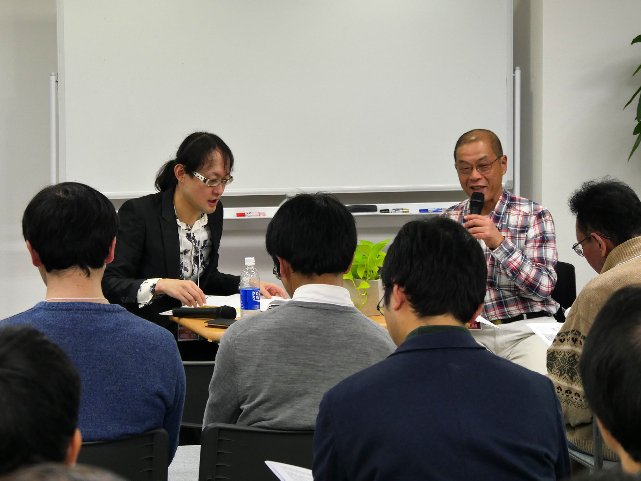
積木 : もう前口上は抜きで、いきましょう。私の選ぶ都市伝説 Best 3 。 1 番目は、皆さんもご存じと思うんですが、「ベッドの下の斧男」。内容は （配布資料 17 ページを） 読んでいただくとして、最後に、「あなたの寝ているベッドの下に斧を持った男が」 、 という ...... 。平凡な日常が、ある日突然、恐怖に変わる。さらに、それを見事な機転で抜け出す、というストーリー性の素晴らしさ。いずれにしましても大変な逸品だと思うんですが、それともうひとつ、実は、清涼院流水さんと私が 初めて 一緒に仕事をしたのが、清涼院さんの『秘密屋』という小説で、なにを考えたのか、私に「あ とがき」（文庫版の解説）を依頼されまして。その『秘密屋』で中心の謎だったのが、「友達の友達」と、この「ベッドの下の斧男」なんですよ。そういった思い入れもあること。プラス、これは私生活なんですが、私は以前、 " 町の不動産屋 " をやっていまして。その時に、毎週、某・賃貸雑誌を買っていたところ、この話が、まんま載ってたんですよ。もちろん、実話としてね。「だから皆さん、鍵は忘れずにかけましょう」みたいな終わり方をしていて。そういった思い出があるので、それも含めて、第 1 のものとして、挙げさせていただきます。もちろん、都市伝説で すから、こういった事件は実際には起きていません。私は新聞集めが趣味なので、国会図書館に通って、古い新聞をずいぶん見ましたが、こういう記事はありません。一説によると、アメリカで、有名なシリアル・キラー（連続殺人鬼）のテッド・バンディがこういう事件を起こしたんじゃないか、という話もあったんですが、そういった事実もないようです。これは完全な都市伝説です。ただし、似たような事件として、（配布資料 17 ページに掲載した）新聞記事を持ってきました。「 29 歳の会社員。恋心高じ天井裏からビデオ盗撮計画」 、 と。 4 年間、片想いし てい たある 29 歳の男性が、同僚 女性 の鍵をこっ そり 盗んで合鍵をつくり、忍び込み、天井裏から覗き込むと。かなりキモイ事件なんですけれど。
清涼院 : そんな、実際に入れるんですかね？
積木 : 入れるんでしょう。
清涼院 : 江戸川乱歩 の 有名な「屋根裏の散歩者」という作品がありますが。
積木 : それと似たようなものでしょうね。ちなみに、この事件では合計 3 回入ったのかな。真ん中あたりに、最初に侵入を果たしたのは 6 月だったが、その後、冷却期間を置き、 2 度 目 に侵入したのは 12 月に入ってから。その時は、 3 日間も天井裏に潜んでいた、と。これ実は、ちょっと違うんです。天井裏に忍び込んだんです。で、当然翌日、女性が会社に行くから、その時に下りて、逃げるつもりだったんですよ。ところがね、この時、この女性、病気になっちゃいましてね。 3 日間、寝込んじゃったんですよ。それで仕方なく 3 日間いただけであって、ほんと は、すぐに逃げるつもりだったそうです。それは別の新聞に載ったんですけどね。要するに、その時の教訓で、次に行く時はロープとかノコギリを持参して、脱出口をつくったわけです。さらに、ここには載っていないんですが、この時、この男はですね、大量のタオルを持って行ったそうです。どうしてだか、わかりますか？俺みたいな " 近い " 人間はわかるんですけどね、要するに、お手洗いです。 3 日間トイレに行けないでしょ。どう処理したかは知りませんけれど、その時の教訓で要するに、催した時にはタオルに染み込ませちゃおうと。なので彼は大量のタオルを 。
清涼院 : そこでタオルを持って行く、という発想が変ですよね。トイレできないからタオルを持って行く、というのは初めて聴きました。
積木 : 似たような事件は、ほかにもね、学校の校長先生がアパートに住んでいて、 2 部屋先の別の学校の女性教師に似たようなことをやった、という事件もあります。ちょっと面白いのは、次のページ （配布資料 18 ページ） を見てください。押し入れの天袋 ...... 天袋は、わかりますよね？ タンスの上にある。あそこに隠れて ...... それも 9 か月間、隠れていたという女性がいたそうです。天袋にペットボトルなんかを持ち込んだそうなんですが、当然、捕まりました。ちなみに、この女性、それから 1 年後、 2009 年の 12 月、今度は工場の屋根裏に 10 日間寝泊まりして、捕まったんです 。まあ、よっぽど好きなんでしょうね。ちなみに、これは TV なんですが、 2008 年 3 月 26 日、日本 TV 系の「 ラジかるッ 」という番組で話していたんですが、アルフィーの高見沢俊彦さんが人気絶頂だった頃、家に帰って押し入れを開けたら、中にファンがいたことがあるそうです。
清涼院 : 芸能人の方は、よく聞きますよね。そういう話。
積木 : まあ、皆さんもたまにはね、天袋の中とか、季節物の服を入れてるタンスの中、月に 1 回、見たほうがいいですよ。
清涼院 : 森博嗣さんも、夜中に、庭にファンがいたことがあるらしいです。さすがに警察を呼んだみたいです。
積木 : 第 1 話は、「ベッドの下の斧男」と。ふたつめ、 配布資料 18 ページをご覧ください 。ちょっと意外かもしれませんが、都市伝説というより怪談ですよね。「 テケテケ 」。「 テケテケ 」をご存じでない、という方は、いらっしゃいますか。いませんよね、たぶん。下半身のない、 上半身だけの姿で描写される妖怪と。両腕を使って、こんなふうに、ほふく前進のように歩く音が「 テケテケ 」なので、そう呼ばれています。ぼくが 最初 に見た学校の怪談映画、 映画『 学校の怪談 』 の中では、どちらかと言うとコミカルに描かれていますよね。たしか、マンガチックに。その反面 ですね、少女の姿で描かれる時もあります。ぼくが観た限りでは、 DVD の 『テケテケ』 という作品では、そうなっていました。この時は、その姿はコミカルから一転して、たいへん不気味で、その姿を見た者は、その場で体をまっぷたつにされる、と言われています。私は 読んで いないんですが、 『 地獄先生ぬ 〜 べ 〜』 では、少女型の「 テケテケ 」を題材にしたものがあったようです。もしかしたら、ご覧になった方もいるかと思います。
清涼院 : 積木さん、「てけてけ」という居酒屋チェーンは関係あるんですかね？
積木 : あー ...... 次、行きます （観客笑） 。
清涼院 : まあ、わからないでしょうけれど。
積木 : ええ。この話には、少女系の「 テケテケ 」につきましては、ある都市伝説がありまして、たぶん、こちらが「 テケテケ 」のルーツではないかと言われています。それがその次の （配布資料 18 ページに掲載している） 北海道の踏切事故。まあ、これも時間がないので読んでいただくとして。結局、要するに、電車に衝突された少女がまっぷたつにされてしまう、と。当然、死んだと思いますよね。ところが、彼女は生きていて、降りてきた運転手に向かって、「私の足はどこ？」と迫っていく、という話でございます。で、その時、ざっと読んでいただければわかると思いますが、最後、ラストとして 、極寒の北海道、少女の体が切断された時、切断面の傷口は寒さのために一瞬にして凍りついて、出血が押さえられた。そのため彼女は即死せず、上半身だけが、しばらくのあいだ、生き永らえていたのだという。（観客に向かって）皆さん、嫌な顔しないでください（笑）。わかりきった話ですけど、こんなの、あるわけないですよね。当然、誰もが、こんな話は都市伝説だと思っていました。ところが、私が昔、世話になっていた、「現在奇談」という都市伝説系のサイトがあったんです。そこのヒロシさんという管理人さん、まあ、私も 3 回くらいオフ会で飲んだことのある方なんですが、実は、よ く似た事件が、昭和 10 年、 1937 年かな ...... 1935 年か。 5 月 30 日にですね、北海道ではなくて、東京の赤羽駅で起きたらしいんですよ。それが （配布資料 19 ページで） 紹介している記事です。ごめんなさい、ちょっと読めないところもあったんですが。参考記事、係官に明確な答え、両足切断の女。鉄道事故で自殺を図る、と。駅名は書いていないんですけど、実際には赤羽駅のそばの貨物列車に飛び込んだ女性が両足を切断されたと。で、非常に驚きなのは、この女性が、切断されているにもかかわらず、係官の質問にたいへん明瞭に答えていると。そこに書いてありますけれど。 「 私 は世の中が嫌になったので、勝手に死ぬのですから」、と。あるいは、看護する兄に「疲れるから、おやすみなさい」と話している、と。まあ、そういう事件があったんです。それで、このヒロシさんという方は、たいへん研究熱心な方なので、この人自身が国立国会図書館へ行きまして、昭和時代に発行されました、『教育心理研究』という小雑誌を発見したんです。その中の心理学者のひとりが、たいへんこの事件に興味を持ちまして。係官とか警官に、いろいろ聞いたそうなんですね。（資料を観客に示して）こういったものでございます。それによりますと、赤羽駅付近が現場となっております。両足と書いてあったんですが、彼の聞いた話では、左側腹部、脾臓のあたりから、右腹部を斜めに右足の大腿部に至る部分で、まっぷたつになっていた。脾臓はこのへんですから、こんな感じで本当にまっぷたつになっていたんです。にもかかわらず、彼女は約 4 時間、生きたそうです。そして、先ほども言ったように、係官にも明瞭に答えていたと。そこでインタビューした警察官は、心理学者に、こんなことを 言ったそうです。「ほとんど下半身が断ち切られた上半身のみが、動きもすれば、しゃべりもする。その有様は、人々が見れば、化け物のように見え ることであろう」。まあ、今となっては確証がないのですが、管理人のヒロシさんによれば、もしかしたら、この事件が「テケテケ」の話になったのではないか、と。ちなみに、これは今から 80 年も前の医学知識ですので、どうとも言えないのですが、この 『 教育心理研究 』 によりますと、「彼女が即死しなかったのは、重い車輪によって血管を潰され、 結果的に 失血が抑えられたようだ」と言っているそうです。事実、現場にいた警官によると、血痕のようなものはほとんどんなかった、とも伝えられています。繰り返しますが、あくまで 80 年前の医学知識ですので、どこ まで正確かはわかりません。確認のしようもないです。これが「テケテケ」についてでございます。そして、 3 つめ。これも都市伝説と言えるか、なかなか微妙なんですが、「牛の首」という話、皆さん、聞いたことはございますでしょうか。
清涼院 : 「鮫島事件」でも出てきましたよね。
積木 : ええ 、出てきましたね。 この怪談は、あまりにも恐ろしいため、聞いた者は 3 日と経たずに死んでしまうという。そのため、この話は誰もが決して口にしない。また、天保の大飢饉の際、東北で起きた惨劇 とも 。これが、「鮫島事件」で紹介した「牛の首」ですね。しかし、まあ、天保の大飢饉の話は、くわしくは小説を読んでいただくとして。この話は、そもそもオリジナルではなくて、伝奇漫画 ...... 伝奇というのは伝説の伝に奇談の奇で、 『宗像（むなかた） 教授伝奇考 』 という漫画があるんですが、これに載っていた話のパクリであることが、今ではわかっています。さらに、この 『宗像教授 伝奇 考』に出てきた「牛の首」みたいな話も、実際には朝鮮半島の民話であることがわかっています。そもそも「牛の首」というのは、この配布資料 19 ページにも書いてありますけれども、亡くなられました小松左京先生の短編小説のタイトルなんですね。それは、主人公がたまたま「牛の首」という恐ろしい怪談を耳にする。そこで、いろんな人に「『牛の首』って、どんな話？」と聞いて回るのだが、誰もが口をそろえて「あんな恐ろしい話は聞いたことがない」と言い、男は、その話がどうしても知りたくて、尋ね周る話ですが、結局、その話はわかりません。ただ、恐ろしいという伝説だけが遺っている。幻の話というのが、その小説の内容でございます。それで、ネットの都市伝説界では、「牛の首」はどんな話かと聞くと、「あんな恐ろしい話は聞いたことがない」という返事がすぐに返ってくるほど有名なんですが、じゃあ、ほんとに「牛の首」はないのかと、ネットでいくつかそれらしい話を調べたんですが、どれもつくり話か、関係ありません。その後、配布資料 19 ページの下にあるんですが、小松左京先生のインタビューが見つかりまして、これはハルキ文庫の中に、最終巻か何かに載っているんですけれど、くわしくは読んでいただくとして、小松左京先生によりますと、この「牛の首」というのはタイトルだけあって、ミステリー界では、そんな話が 10 年くらいおきにループすると。つまり、「牛の首」という恐ろしい話がある、という話だけがループしている、ということで。つまり、タイトルだけで、「牛の首」という話は存在しない。恐ろしい話だけがひとり歩きしているものである、ということが完全に結論づけられたと。都市伝説マニアのあいだではね。そう思ったんですよ。ところが近年、昨年 （ 2016 年） ですが、とんでもない発見があったんですね。資料の次 、配布資料 20 ページを 見てください。これは、ホラー作家でもある妖怪 研究家でもある黒史郎（くろ・しろう）先生、私もクトゥルー系の会合で会ったことがあるんですけれども、この方が、なんと大正 15 年、 1926 年に発表された 『文藝市場』 という雑誌の中に「牛の首」という話を発見したんですよ。こちらが黒四郎先生からいただきました文芸誌の表紙 のコピー です。その中に、たしかに、「牛の首」というタイトルがあったんですね。話はまあ読んでいただくとして、正直言って、これは黒 史 郎先生も言ってらっしゃるんですが、あまり怖い話じゃないんです、実は。まあ、とにかく、それでも「牛の首」が架空の話ではなかった、とい うのは、まさに都市伝説としては常識を覆す発見であると思うんですが。ただ、同時にですね。これによって、ある意味、新しい謎ができちゃったんです。なんでこの「牛の首」の話がね、小松左京先生の耳に届き、そして、現在まで語り継がれているのか。これに関しては、まったくの謎としか言いようがありません。興味のある方は、これをぜひミステリーにしてください。こんな感じのお話でございます。一応、私としては、これが Best 3 として挙げさせていただいた話なんですが。
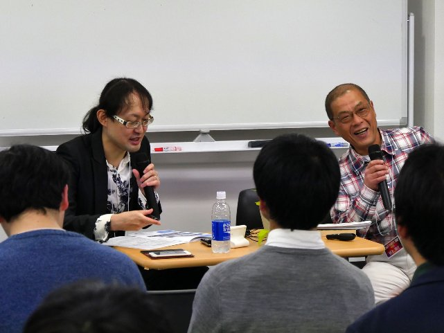
清涼院 : 持ち時間的には、まだ 2 分 30 秒くらい、だいじょうぶです。
積木 : 都市伝説は、先ほど言ったように、身近でありながら、決して手が届かない。ですから、その都市伝説が、実際に現実の社会に介入したお話をしたいと思います。これはですね、 2004 年、 3 月 19 日のことです。東京外国為替市場で、突然、円が大量に売られる、という事件がありました。理由はですね、東京・渋谷でテロが起きる、という噂が流れたからなんです。その後、誤報とわかって買い戻されたんですが。市場関係者によりますと、噂の出どころが、 なんと、 渋谷を歩いていた女子高生だったんですね。この女子高生が道を教えたアラブ人に、「 19 日午 後 5 時に、渋谷駅前のハチ公前口には近づかないほうがいい」と忠告されたと。そういうメールを友人に送ったところ、それが巡り巡って、市場関係者のところに届いたそうなんです。これ、ご存知の方、いらっしゃいますよね。有名な都市伝説。「アラブ人の恩返し」、あるいは「親切なアラブ人」。ちょっと説明します。ある女性がアラブ人に道を聞かれた。女性が親切に道を教えると、アラブ人は非常に感激し、別れ際にこう言った。「あなたはとても親切に してくれたら、いいことを教えます。今日から 1 週間、決して地下鉄には乗ってはいけません。いいです か、決して地下鉄に乗ってはいけません」。この話を不審に思った女性が、警察に相談しに行きます。警察官は大慌てで外国人の写真が載ったリストを何枚かその人に見せると。「それは、外国人のテロ・グループのメンバーの写真なのですが、この中に見おぼえのある人はいますか」、と。その中のひとりが、まさに先ほど、その女性が道を教えたアラブ人だった。これが有名な「アラブ人の恩返し」、あるいは「親切なアラブ人」と言われている都市伝説です。これは 2001 年 9 月 11 日、「 9 ・ 11 」以降に、一気に世界中に流布した都市伝説なんですが、その 都市伝説が、まさに為替市場を動かしてしまったんです。ここで注意していただきたいのは、為替相場、あそこには素人は入り込めません。やってるのは、プロのディーラーです。誰でも参加できる株式市場と違って、為替市場は簡単にデマや噂では動きません。彼らはすべて、経済、政治、社会問題のプロが、ディーリング、売り買いをしているんです。そんな彼らが、あっさり都市伝説に騙されてしまった、という話です。都市伝説というのは我々には届かない世界ですが、こんなふうに、時々、我々に悪戯をしてきます。だから私は都市伝説が好きなわけです。そんな話で以上です。
清涼院 : 積木先生、ありがとうございました。
ターニャ : 「 質疑応答＆ Ending 」 。
清涼院 : では、工刀さんのほうで呼びかけていただいて、質問を募っていただけますか。
工刀 : なんについてですか。
清涼院 : 今日の 内容に 関してですね。蘇部さんがこのあと、お帰りになるので、特に蘇部さんへの質問とか中心に。
工刀 : 皆さんのほうから、 なに か質問とかありますでしょうか。
清涼院 : 蘇部さんに限らず、でいいですよ。 なに かご質問があれば。
工刀 : 今日の集まりの全体に関する質問とか、なんでも結構ですので。
（蘇部氏が手をあげる）
清涼院 : お、蘇部さんから。
蘇部 : 今日、実は、清涼院さんの来年 （ 2018 年に） 出る新作の話をちょこっと聞けるんじゃないかと楽しみにして来たんですけど、慎しみ深い方なんで、ご自分からは、なかなか 話 されないので。
清涼院 : そういうわけではないんですけれど。まだ出ていないので。ぜんぜん慎み深くはないですよ。ここ （配布資料の最終ページ） に宣伝も載せていますし。
蘇部 : よろしかったら、私がいるあいだに、 1-2 分でも 、 ちょっと設定みたいなものをお願いします。
清涼院 : そうですね。せっかく振っていただいたんで。これ、やらせじゃないですよ （観客笑） 。蘇部さんに聞いてください、と言っていたわけじゃないですから。ご存知の方もいらっしゃる かもしれないんですけれど、ぼくがこの作品を依頼されたのは 9 年くらい前なんです。配布資料の最終ページ （ 21 ページ） に 紹介バナーが載っているん ですが、九州の戦国武将、大村純忠（おおむら・すみただ）という人がいて。日本で最初にキリシタン大名になった男なんですけれど。最初、大村純忠を書きませんか、と言われたのが 9 年前で。純忠の資料を読んでいたら、ルイス・フロイスという有名な人物にぶつかっ たんです。で、ルイス・フロイスも面白い人なので、この 2 冊を書きたいです、と、出版社に約束して 。 2009 年の時点で、そういうことになっていたんです。とにかく書くのが大変で。というのは、大村純忠は資料が少ないですし、最大の資料がルイス・フロイス （の書き遺した『日本史』という記録） なんです。ルイス・フロイスのほうは、ポルトガル人宣教師なので、彼を書くためにはポルトガル語とかラテン語を理解しないといけないし、また宣教師ということで、キリスト教を理解しないといけな い んで、まあ、その勉強にほとんどの時間を費やしたくらいです。だから、ようやく来年 （ 2018 年） 1 月に出るん ですけれど、ほとんど勉強の時間がすべてだった、というか。で、大村純忠は 1 冊で完結しているんですけれど、ルイス・フロイスのほうは資料自体がめちゃめちゃ長い の で、これは大河小説として今後も出していくつもりで。まあ来年 1 月に 1 巻が出て、 4 月には 2 巻も出したいなと思っている感じで。またミステリーを書きたい気持ちはあるんですけれど、この大村純忠とルイス・フロイスを片づけないことには次に行けないな、と思っているので。片 づ けたいな、と思っています。これも出版社の都合で、なかなか刊行が決まらなくて 。 ちょうど蘇部さんの 『 小説 X 』 の刊行が決ま らない 時期とモロかぶりで、ふたりで傷をナメあって、「お互い、大変ですね」とか言い合ってたんですけど。蘇部さんも 『 小説 X 』 という形で動き始めた時に、ぼくも刊行時期 を 予告できて 。 今日このイベントで、ふたりともそういう形で発表できて非常に嬉しいです し、 蘇部さんが、最後に、 ぼくの作品についても 振ってくださったのが、すごく嬉しかったです。聞いてくださって、ありがとうございます。
蘇部 : ありがとうございました。
（註 : 清涼院流水の新作 、 『純忠 日本で最初にキリシタン大名になった男』と『ルイス・フロイス戦国記ジャパゥン』は 、 2018 年 1 月に 同時 刊行されました）
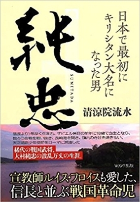
清涼院 : ほかにも、皆さん、遠慮されていると思うんですが、なかなかこういう場もないと思うので。懇親会でもお話しできるとは思うんですけど、このまま 帰られる方は、この場しかないですから。いかがですか。
（参加者の手があがる）
参加者 A: 個別の作品についてなんですけれども、エージェント工刀さんが神狩り博士さんの執筆スタイルをご存知かどうかわからないんですが、同じ人が英語版も日本語版も両方書いている、ということで。神狩り博士さんは、最初に日本語を書いて、次に英語版を書いているのか 。 あるいは、逆なのか。それとも、同じシーンを、ほぼ同時並行で書いているのか。執筆スタイルを知りたいんですけれども。お願いできますでしょうか。
清涼院 : それについては、エージェント工刀さんは、ご存知なんですか？
工刀 : 執筆スタイルねぇ。いや、それは本人に聞かないと、わからないんで。
清涼院 : 正体は坂嶋さんかもしれないですけどね。
工刀 : そうですね。じゃあ坂嶋さん、そこのところについて何かご存知か、何か考察とか答えはお持ちでしょうか。
坂嶋 : 日本語と英語、どっちが先か、ですよね？それは ぼくも 気になっていたんですが、日本語が先のような気がします。ぼく が 読んだ 感じ では、日本語の言葉遊びに合わせて英語がつくられているようなイメージを受けたんで す 。どっちかと言うと日本語が先じゃないか、という予想です。ぼくは本人じゃないので、わかりませんが。
工刀 : ほんとに、本人じゃないんですかね。 ずいぶんお詳しい ですけれども。
清涼院 : あやしいですね。
工刀 : では、坂嶋さんの場合は、日本語が先で、英語がその次、という。
坂嶋 : ただ、英語のほうが書き慣れている感じは受けました。
工刀 : 英語のほうが書き慣れている？
坂嶋 : はい。
工刀 : はぁー、なるほどねぇ。
坂嶋 : 日本語の文章より英語のほうが、わりと自然に書いているようなイメージも 受けたの で。ちょっと自信はないです が 。
工刀 : なるほど。
清涼院 : でも、バイリンガル作家 って 本当に ぜんぜん いないので、わからないですよね、そのあたり。どういうふうに脳内でなっているのか、とか。
工刀 : そうですね。うーん。ここでついでにアンケート取ったらいいんじゃないですかね。どっちが先かと思われますかと、皆様に。
清涼院 : じゃあ、聞いてみましょう。
工刀 : じゃあ、神狩り博士の 『 Towerld 』 が、まず日本語から先に書かれていると考えていらっしゃる方、手を あ げてみてください。では、英語が先だという方は？ああ、英語のほうが少ない。
清涼院 : わからない人も多いんじゃないですか。
工刀 : では、わからない、というか、同時に書いている。たとえば、右側で英語、左側で日本語、みたいな。
秋月 : 超人ですね （笑） 。
工刀 : まあ、人間じゃないかもしれないし。じゃあ、両方だと思う方は、いらっしゃいますでしょうか。あれ、いない？なんだよ、もう。まあ、いいや。
清涼院 : でも、非常に興味深い質問で良かったですね。もうお一方くらい質問があれば。次がラストでいいですけれど。
工刀 : 質問するチャンスは今のうちですから、 なに かありましたら、よろしければ。
（参加者の手があがる）
参加者 B: 小説をお書きになっている作家さんに質問です。小説のタイトルを決める時、というのは、どのように決めてらっしゃるのか、ちょっとお聞きしたいなと。
工刀 : なるほど、作品を書く上で、タイトルをどのように決めていらっしゃるか。それ以前に、人によっては、タイトルから先に決めて作品を書くのか、それとも、作品を書いてからタイトルを決めるのか、ということでもありますよね。
清涼院 : 結論から言うと、両方いるんですよ。いろんな作家さんに聞くと、タイトルを決めないと書けない、という人もいますし、書いたけど、タイトルを決められない、という人もいますし。これは必勝法はなくて、タイプですね。ぼくなんかはタイトルを決めないと書けない、というタイプで。森博嗣さんもそうなんですけど。
工刀 : ですよね、はい。
清涼院 : あと、蘇部さんの今回の企画のように、タイトル募集という例も、極端な話、あるわけで。作家さんによっては、タイトルなんて、どうでもいい、とおっしゃる方もいるくらい。だから、ある作家さんにとっては、タイトルは め ちゃくちゃ大事なんですけど、ある作家さんには、タイトルなんかどうでもいい、という考え方もあって、不思議なんですけれど。もうちょっと具体的に、誰にどのようなことを聞きたい、というのが、もしあれば。
参加者 B: それぞれの作家さんに聞いてみたいです。
清涼院 : じゃあ、ひとことずついただきましょう。いちばん後ろの積木さんから。
積木 : そうですね。タイトルですか。やっぱり、ぼくの場合は、ある程度書いたか、ストーリーが決まったところで決めますね。そんな感じです。よろしいでしょうか。
参加者 B: ありがとうございます。
清涼院 : では、秋月さん。
秋月 : 自分は、けっこう最初にタイトルは決めるんですけど、書き終わって変わったりとか、あと、編集者の人に変えられたり、とか。いろいろあります。なんかイメージ的に、最初に、たぶん 『 The Gifted 』 とかは、最初に 4 個か 5 個、タイトルを出して、その中からいちばん し っくりくるのを選んで書いたりとか、書き始めてからそれを 決めたり とかはしています。
清涼院 : では、蘇部さん、どうぞ。
蘇部 : いや、あのー、タイトルが 没 になった人間がタイトルについて語るのはどうかと思うんですけれど 。 私は基本は、あの、ストーリーを最初から最後まで考えて、そうしたらタイトルが自然に浮かんでくるわけですけれど、まあ、今回、それが 没 になった、というわけで。でも、まあ、基本的にはあの、タイトルを先に考えて書き出すのは邪道だと思ってて。
清涼院 : （笑）。
蘇部 : あ、ごめんなさい ね（笑） 。物語がタイトルを生み出す、とは思ってるんですけれど。まあ、いつもは、あのー、秋月さんみたいに 編集者から ダメ出しくらって、かなり喧嘩したりするんですけど、今回は、清涼 院さんのアドバイスもあったりして、わりとすんなりオーケーしたんですけど。まあ、次はどうなるかわかんないです。
清涼院 : そんな感じで、いいですか？
参加者 B: ありがとうございます。
工刀 : ありがとうございました。
清涼院 : では、質疑応答も、このあたりで終わりとさせていただきます。そして、いよいよ本当にラストです。最後に、積木さん、ちょっと前に出てきていただけますか。秋月さんと蘇部 さんも、立ち上がって前に。 K.G. さんとターニャも、前へ出てきてください。最後は締めなので、全員で。ここは写真 NG で、お願いします。エンディングの音楽もかけました。今日は本当に、皆さん、長時間おつきあいいただき、ありがとうございました。いろいろと至らぬ点もあったかと思いますけれど、ご静聴いただき、感謝しています。 The BBB は、こういう小さ な規模でやっていますから、今後もどこまで発展していけるか、わからないんですが、本当に、皆さんの支えがあったから、ここまでやってこられたと思います。ここにいるメンバーが中心となって The BBB をやってきましたので、最後に、もう一度、ひとりずつ紹介しますので、皆さん、拍手をお願いします。エージェント工刀さん。そして、積木鏡介さん。秋月涼介さん。蘇部健一さん。そして、 K.G. さん。そして、ターニャです。今日は読者代表の方にプレゼンしていただく、というのは、ぼくにとってひとつの挑戦でありましたし、あれで訴えたかったのは、 皆さんは、今は傍観者かもしれないんですけれど、当事者になる可能性がある、ということなんですよ。次に読者代表になるのは皆さんかもしれないし、書き手になって、次は、あなたがこちら側に立っているかもしれないんです。これからも、皆さんは傍観者ではなく、自分も The BBB の Cast （参加者）なんだ、という感じで、我々と一緒に、また走っていただけると、ぼくも嬉しく思います。今日は本当にありがとうございました。これからも、よろしくお願いいたします！これをもちまして、今年の Cast Party を終わらせていただきます。最後に 、皆さん自身にも拍手をお願いします。本当に、ありがとうございました。
（この「 Cast Party 2017 」は、 2017 年 11 月 25 日に開催されたイベントを eBook 化した The BBB: Breakthrough Bandwagon Books のオリジナル作品 です ）